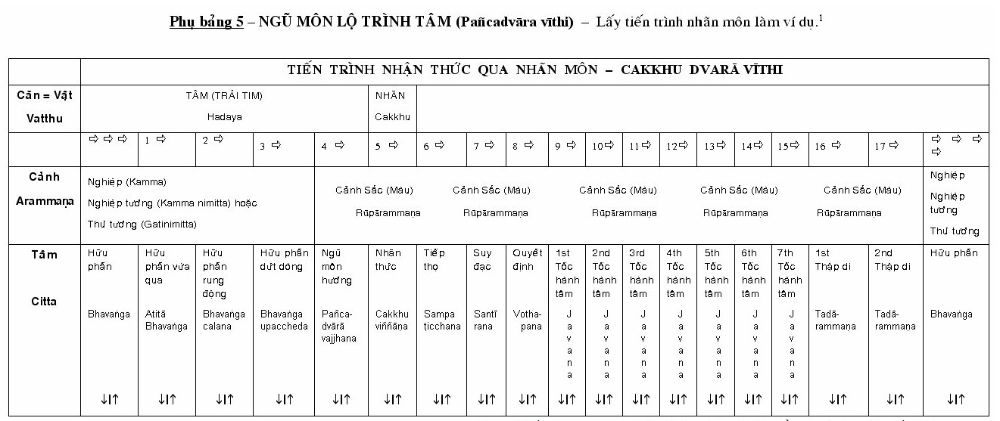
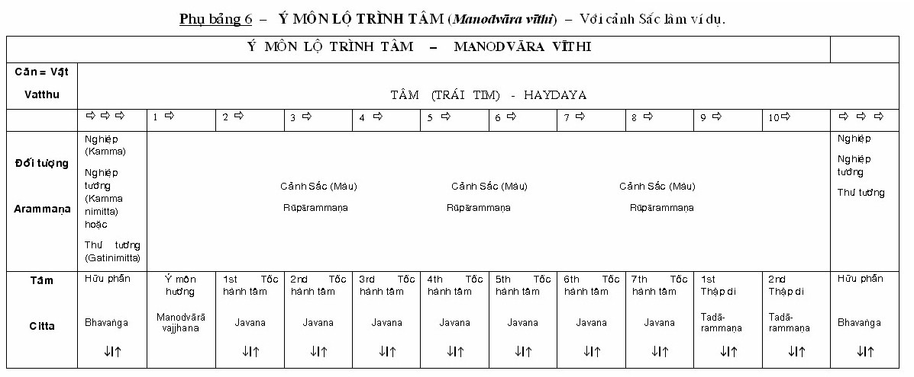

<!DOCTYPE HTML PUBLIC "-//W3C//DTD HTML 4.0 Transitional//EN">
<HTML>


<HEAD>
<META HTTP-EQUIV="Content-Language" CONTENT="en-au">
<META HTTP-EQUIV="Content-Type" CONTENT="text/html; charset=utf-8">
<META NAME="GENERATOR" CONTENT="Microsoft FrontPage 5.0">
<META NAME="ProgId" CONTENT="FrontPage.Editor.Document">
<TITLE>Biet &amp; Thay - Pa-Auk Sayadaw</TITLE>
<STYLE>
<!--
div.Section1
	{page:Section1;}
span.MsoEndnoteReference
	{color:blue;
	vertical-align:baseline;}
-->
</STYLE>
</HEAD>

<BODY BGCOLOR="#FFFFFF" LEFTMARGIN="0" RIGHTMARGIN="0" TOPMARGIN="0" VLINK="#0000FF">

<DIV ALIGN="center">
  <CENTER>
  <TABLE BORDER="0" CELLSPACING="1" WIDTH="100%" BGCOLOR="#FFECD9">
    <TR>
      <TD WIDTH="20%"><STRONG><A HREF="https://budsas.hopan.vn/index.htm">
      <FONT SIZE="2" FACE="Times New Roman">Trang gốc</FONT></A></STRONG></TD>
      <TD WIDTH="60%">
      <P ALIGN="center"><B><FONT COLOR="#008000" FACE="Times New Roman">Trang 
      web BuddhaSasana</FONT></B></TD>
      <TD WIDTH="20%">
      <P ALIGN="right"><FONT FACE="Times New Roman" SIZE="2"><STRONG>
      <A HREF="https://budsas.hopan.vn/fonts/caiphong.htm">VU Times</A></STRONG> font</FONT></TD>
    </TR>
  </TABLE>
  </CENTER>
</DIV>
<DIV ALIGN="center">
  <CENTER>
  <TABLE BGCOLOR="#FFFFFF" BORDER="0" CELLPADDING="10" CELLSPACING="0" WIDTH="100%">
    <TR>
      <TD BGCOLOR="#DCDEDD">&nbsp;</TD>
      <TD WIDTH="700"><B>
      <P ALIGN="center"><FONT COLOR="#800000"><FONT SIZE="5">Biết và Thấy <BR>
      </FONT><FONT SIZE="4">Knowing and Seeing </FONT></FONT></P>
      <P ALIGN="center"><I><FONT SIZE="4" COLOR="#000080">Thiền sư Pa-Auk Tawya 
      Sayadaw (U Acinna) <BR>
      Tỳ khưu Pháp Thông dịch </FONT></I></P>
      </B>
      <DIV ALIGN="center">
        <CENTER>
        <TABLE BORDER="1" CELLSPACING="0" WIDTH="379" BORDERCOLOR="#FF0000" BGCOLOR="#FFECD9" CELLPADDING="0" STYLE="border-collapse: collapse">
          <TR>
            <TD WIDTH="358">
            <P ALIGN="center"><B><FONT FACE="Times New Roman" SIZE="2">Lưu ý: 
            Ðọc với phông chữ <A HREF="https://budsas.hopan.vn/fonts/caiphong.htm">VU Times</A> 
            (Viet-Pali Unicode)</FONT></B></TD>
          </TR>
        </TABLE>
        </CENTER>
      </DIV>
      <HR>

        <P CLASS="MsoNormal" ALIGN="center" STYLE="text-align: center">
        <FONT FACE="VU Times"><B><SPAN STYLE="color: maroon">BÀI PHÁP THOẠI 5</SPAN></B></FONT></P>
        <P CLASS="MsoNormal" ALIGN="center" STYLE="text-align: center">
        <FONT FACE="VU Times"><B><SPAN STYLE="font-size: 14.0pt; color: maroon">
        Phân biệt Danh </SPAN></B></FONT></P>
        <P CLASS="MsoNormal"><FONT FACE="VU Times">
        <SPAN STYLE="font-size: 24.0pt">T</SPAN>rong bài giảng vừa rồi, chúng ta 
        đã bàn về cách làm thế nào để tu tập thiền tứ đại, cũng như làm thế nào 
        để phân biệt các phần tử của sắc gọi là &quot;<I>Rūpa kalāpa</I>&quot; (tổng hợp 
        sắc). Trong bài này, chúng ta sẽ bàn một cách tóm tắt về cách phân biệt 
        danh (<I>nāma kammaṭṭhāna</I>), giai đoạn kế tiếp trong thiền <I>
        Vipassanā - </I>Minh sát.</FONT></P>
        <P CLASS="MsoNormal"><FONT FACE="VU Times">Tôi sẽ bắt đầu bài giảng bằng 
        cách giải thích tóm lược những sự kiện cơ bản về tâm cần phải có để hiểu 
        được sự phân biệt &quot;danh&quot;.</FONT></P>
        <P CLASS="MsoNormal"><FONT FACE="VU Times">Như trong Abhidhamma (Vi diệu 
        pháp) đã giải thích, tâm con người gồm một cái tâm (<I>citta</I>) biết 
        đối tượng của nó, và các tâm sở phối hợp cùng khởi lên với tâm ấy. Có 
        năm mươi hai tâm sở, chẳng hạn xúc (<I>phassa</I>), thọ (<I>vedanā</I>), 
        tưởng (<I>saññā</I>), tư (<I>cetanā)</I>, nhất tâm (<I>ekaggatā</I>), 
        mạng căn (<I>jīvitindriya</I>), và tác ý (<I>manasikāra</I>)</FONT><A HREF="#_edn1" NAME="_ednref1" TITLE><SPAN CLASS="MsoEndnoteReference"><SPAN STYLE="font-size: 10.0pt; font-family: VU Times">[1]</SPAN></SPAN></A><FONT FACE="VU Times">.</FONT></P>
        <P CLASS="MsoNormal"><FONT FACE="VU Times">Có tổng cộng tám mươi chín 
        loại tâm</FONT><A HREF="#_edn2" NAME="_ednref2" TITLE><SPAN CLASS="MsoEndnoteReference"><SPAN STYLE="font-size: 10.0pt; font-family: VU Times">[2]</SPAN></SPAN></A><FONT FACE="VU Times">, 
        chúng có thể được sắp xếp theo hai cách, một là theo tính chất thiện, 
        bất thiện và vô ký của chúng, và hai là theo cảnh giới của chúng như: 
        dục giới (<I>kāmāvacara</I>), sắc giới (<I>rūpavacara</I>), vô sắc giới 
        (<I>arūpavacara</I>) hoặc siêu thế (<I>lokuttarā</I>)</FONT><A HREF="#_edn3" NAME="_ednref3" TITLE><SPAN CLASS="MsoEndnoteReference"><SPAN STYLE="font-size: 10.0pt; font-family: VU Times">[3]</SPAN></SPAN></A><FONT FACE="VU Times">. 
        Tuy nhiên, có thể chúng ta chỉ nói về hai loại tâm căn bản:</FONT></P>
        <BLOCKQUOTE>
        <P CLASS="MsoNormal"><FONT FACE="VU Times">1) Tâm thuộc tiến trình nhận 
        thức (<I>citta vīthi</I>),<BR>
        2) Tâm &quot;Phi tiến trình&quot; (<I>vīthi 
        mutta</I>) tức tâm ra ngoài tiến trình nhận thức như: vào lúc tái sinh, 
        lúc chết, và trong hữu phần (<I>bhavaṅga</I>)</FONT><A HREF="#_edn4" NAME="_ednref4" TITLE><SPAN CLASS="MsoEndnoteReference"><SPAN STYLE="font-size: 10.0pt; font-family: VU Times">[4]</SPAN></SPAN></A><FONT FACE="VU Times">.</FONT></P>
        </BLOCKQUOTE>
        <P CLASS="MsoNormal"><FONT FACE="VU Times">Có sáu loại tiến trình tâm 
        (tâm lộ). Năm loại đầu là các tiến trình nhận thức thuộc nhãn môn, nhĩ 
        môn, tỷ môn, thiệt môn, và thân môn, mà các đối tượng tương ứng của 
        chúng lần lượt là các sắc, thinh, hương, vị, và xúc. Chúng được gọi 
        chung là &#39;tiến Trình Nhận Thức Ngũ Môn&quot; hay &quot;Tâm Lộ Ngũ Môn&quot; (<I>pañadvāra 
        vìthi</I>)</FONT><A HREF="#_edn5" NAME="_ednref5" TITLE><SPAN CLASS="MsoEndnoteReference"><SPAN STYLE="font-size: 10.0pt; font-family: VU Times">[5]</SPAN></SPAN></A><FONT FACE="VU Times">. 
        Loại tiến trình nhận thức thứ sáu lấy tất cả mọi đối tượng</FONT><A HREF="#_edn6" NAME="_ednref6" TITLE><SPAN CLASS="MsoEndnoteReference"><SPAN STYLE="font-size: 10.0pt; font-family: VU Times">[6]</SPAN></SPAN></A><FONT FACE="VU Times"> 
        làm đối tượng của nó, và được gọi là &#39;tiến Trình Nhận Thức Y Môn&quot; hay 
        &quot;Tâm Lộ Ý Môn&quot;</FONT><A HREF="#_edn7" NAME="_ednref7" TITLE><SPAN CLASS="MsoEndnoteReference"><SPAN STYLE="font-size: 10.0pt; font-family: VU Times">[7]</SPAN></SPAN></A><FONT FACE="VU Times"> 
        (<I>manodvāra vīthi</I>). Mỗi tiến trình nhận thức bao gồm một chuỗi các 
        loại tâm khác nhau. Các tâm trong bất kỳ một tiến trình nhận thức nào 
        cũng khởi lên hợp theo trật tự tự nhiên của tâm (<I>cittaniyāma</I>). 
        Nếu muốn phân biệt danh, hành giả phải thấy được chúng khi các tâm này 
        khởi lên trong trật tự tự nhiên ấy.</FONT></P>
        <P CLASS="MsoNormal"><FONT FACE="VU Times">Để làm được như vậy, trước 
        hết hành giả phải tu tập định với - hoặc niệm hơi thở (<I>ānāpānasati</I>) 
        hoặc đề mục thiền chỉ khác, hoặc thiền tứ đại. Một vị thuần quán thừa 
        hành giả cũng phải hoàn tất việc phân biệt sắc (<I>rūpa kammaṭṭhāna</I>), 
        trước khi khởi sự phân biệt danh (<I>nāmā kammaṭṭhāna</I>). Tuy nhiên, 
        vị chỉ thừa hành giả (<I>samatha - vehicle yogi</I>) có thể chọn: phân 
        biệt danh trước, hoặc phân biệt danh của các bậc thiền vị ấy đã đạt đến 
        trước (tức danh thuộc bốn thiền sắc giới và bốn thiền vô sắc)</FONT><A HREF="#_edn8" NAME="_ednref8" TITLE><SPAN CLASS="MsoEndnoteReference"><SPAN STYLE="font-size: 10.0pt; font-family: VU Times">[8]</SPAN></SPAN></A><FONT FACE="VU Times">. 
        Mặc dù vậy để phân biệt danh dục giới, vị ấy cũng cần phải hoàn tất việc 
        phân biệt sắc trước.</FONT><A HREF="#_edn9" NAME="_ednref9" TITLE><SPAN CLASS="MsoEndnoteReference"><SPAN STYLE="font-size: 10.0pt; font-family: VU Times">[9]</SPAN></SPAN></A></P>
        <P CLASS="MsoHeading7" ALIGN="left" STYLE="text-align: left; margin-left: 0cm; margin-right: 0cm; margin-top: 0cm; margin-bottom: 6.0pt">
        <B><SPAN LANG="EN-US" STYLE="font-family: VU Times">Bốn Giai Đoạn Phân 
        Biệt Danh.</SPAN></B></P>
        <P CLASS="MsoNormal"><FONT FACE="VU Times">Danh được phân biệt theo bốn 
        giai đoạn:</FONT></P>
        <BLOCKQUOTE>
        <P CLASS="MsoNormal"><FONT FACE="VU Times">1) Phân biệt tất cả các loại 
        tâm (<I>citta</I>) khởi lên bên trong.<BR>
        2) Phân biệt mỗi và mọi tâm hành (<I>nāma dhamma</I>) trong tất cả các 
        loại tâm.<BR>
        3) Phân biệt trình tự tâm, tức là phân biệt tiến trình nhận thức (<I>vīthi</I>) 
        khởi lên ở sáu môn (<I>dvārā</I>)<BR>
        4) Phân biệt danh bên ngoài (<I>bahiddha nāma</I>)</FONT><A HREF="#_edn10" NAME="_ednref10" TITLE><SPAN CLASS="MsoEndnoteReference"><SPAN STYLE="font-size: 10.0pt; font-family: VU Times">[10]</SPAN></SPAN></A><FONT FACE="VU Times"> 
        , một cách chung chung.</FONT></P>
        </BLOCKQUOTE>
        <P CLASS="MsoHeading7" ALIGN="left" STYLE="text-align: left; margin-left: 0cm; margin-right: 0cm; margin-top: 0cm; margin-bottom: 6.0pt">
        <B><SPAN LANG="EN-US" STYLE="font-family: VU Times">Phân Biệt Tiến Trình 
        Tâm Thiền (</SPAN></B><I><SPAN LANG="EN-US" STYLE="font-family: VU Times">Jhāna</SPAN></I><B><SPAN LANG="EN-US" STYLE="font-family: VU Times">)</SPAN></B></P>
        <P CLASS="MsoNormal"><FONT FACE="VU Times">Nếu hành giả đã đắc thiền, 
        với đề mục niệm hơi thở chẳng hạn, thì chỗ khởi đầu tốt nhất để phân 
        biệt danh là tâm thiền và các tâm sở đồng sanh với nó.</FONT></P>
        <P CLASS="MsoNormal"><FONT FACE="VU Times">Có hai lý do để làm điều này. 
        Thứ nhất là khi tu tập thiền (<I>jhāna</I>), hành giả đã phân biệt năm 
        thiền chi, như vậy có nghĩa là hành giả có một kinh nghiệm nào đó trong 
        việc phân biệt các tâm sở phối hợp. Lý do thứ hai, đó là tốc hành tâm 
        thiền (<I>jhānajavana citta</I>) khởi lên rất nhiều lần liên tiếp nhau, 
        do đó sẽ nổi bật và dễ dàng cho việc phân biệt hơn. Điều này tương phản 
        với tiến trình tâm dục giới (<I>kāmāvacara vithi</I>) ở đó tốc hành (<I>javana</I>) 
        chỉ khởi bảy lần trước khi một tiến trình tâm mới khởi lên.</FONT><A HREF="#_edn11" NAME="_ednref11" TITLE><SPAN CLASS="MsoEndnoteReference"><SPAN STYLE="font-size: 10.0pt; font-family: VU Times">[11]</SPAN></SPAN></A><FONT FACE="VU Times">
        </FONT></P>
        <P CLASS="MsoNormal"><FONT FACE="VU Times">Vì thế, để phân biệt danh của 
        bậc thiền (<I>jhāna</I>) hành giả bắt đầu bằng cách lập lại sơ thiền, 
        với đề mục hơi thở chẳng hạn. Xuất khỏi thiền ấy và phân biệt Hữu phần -
        <I>bhavaṅga</I> (Ý môn), và tợ tướng hơi thở (<I>ānāpāna - paṭibhāga 
        nimitta</I>) cùng với nhau. Khi <I>nimitta</I> (tướng) xuất hiện ở hữu 
        phần, hãy phân biệt các tâm hành - đó là năm thiền chi theo đặc tính 
        riêng của chúng. Năm thiền chi là:</FONT></P>
        <BLOCKQUOTE>
        <P CLASS="MsoNormal"><FONT FACE="VU Times">1. Tầm (<I>vitakka</I>): 
        hướng và đặt tâm vào tợ tướng hơi thở (<I>ānāpāna - paṭibhāga nimitta</I>)<BR>
        2. Tứ (<I>vicāra</I>): Giữ cho tâm neo trên tợ tướng ấy.<BR>
        3. Hỉ (<I>piti</I>): Thích thú đối với tợ tướng.<BR>
        4. Lạc (<I>sukha</I>): An vui với tợ tướng.<BR>
        5. Nhất tâm (<I>ekaggatā</I>): Sự hợp nhất của tâm trên tợ tướng hơi 
        thở.</FONT></P>
        </BLOCKQUOTE>
        <P CLASS="MsoNormal"><FONT FACE="VU Times">Thực hành cho đến khi hành 
        giả có thể phân biệt được năm tâm hành (tâm sở) một lần trong mỗi tốc 
        hành tâm sơ thiền (<I>javara citta</I>).</FONT></P>
        <P CLASS="MsoNormal"><FONT FACE="VU Times">Sau khi đã phân biệt được năm 
        thiền chi theo cách này, hành giả cần phân biệt hai mươi chín tâm hành 
        còn lại</FONT><A HREF="#_edn12" NAME="_ednref12" TITLE><SPAN CLASS="MsoEndnoteReference"><SPAN STYLE="font-size: 10.0pt; font-family: VU Times">[12]</SPAN></SPAN></A><FONT FACE="VU Times">. 
        Hành giả bắt đầu với một trong ba: thức (<I>viññaṇa</I>), xúc (<I>phassa</I>), 
        hoặc thọ (<I>vedanā</I>); tùy theo tâm sở nào nổi bật nhất. Rồi mỗi lần 
        thêm vào một tâm hành: đầu tiên phân biệt một loại (tâm hành), kế thêm 
        một nữa, như vậy hành giả phân biệt được hai loại tâm hành, thêm một 
        nữa, như vậy hành giả thấy được ba; thêm một nữa, thấy bốn, v.v... Cho 
        đến khi cuối cùng hành giả thấy được cả ba mươi bốn loại tâm hành trong 
        mỗi tốc hành tâm thiền.</FONT></P>
        <P CLASS="MsoNormal"><FONT FACE="VU Times">Sau đó, phân biệt tất cả các 
        loại tâm hành trong trình tự của sáu loại tâm hình thành một tiến trình 
        ý môn (<I>manodvāra vīthi</I>) của sơ thiền. Sáu loại tâm đó là:</FONT></P>
        <BLOCKQUOTE>
        <P CLASS="MsoNormal"><FONT FACE="VU Times">1. Ý môn hướng tâm (<I>manodvārāvajjana</I>) 
        (12 tâm hành)<BR>
        2. Chuẩn bị tâm (<I>parikamma</I>) (34 tâm hành)<BR>
        3. Cận hành tâm (<I>upacāna</I>) (34 tâm hành)<BR>
        4. Thuận thứ tâm (<I>anuloma</I>) (34 tâm hành)<BR>
        5. Chuyển tộc (<I>gotrabhu</I>) (34 tâm hành)<BR>
        6. Một chuỗi không gián đoạn của các tốc hành tâm thiền (<I>jhāna javana 
        citta</I>), cũng 34 tâm hành mà cho đến bây giờ hành giả đã phân biệt 
        được. </FONT></P>
        </BLOCKQUOTE>
        <P CLASS="MsoNormal"><FONT FACE="VU Times">Để phân biệt được tất cả 
        những tâm hành này, hành giả phải lập lại sơ thiền như trước, xuất khỏi 
        thiền ấy và phân biệt <I>bhavaṅga</I> (hữu phần) và tợ tướng cùng nhau. 
        Khi tợ tướng xuất hiện trong hữu phần, thì phân biệt tiến trình ý môn 
        thiền vừa khởi. Hành giả phân biệt mỗi trong số các loại tâm khác nhau 
        trong tiến trình ý môn sơ thiền, và mười hai hoặc ba mươi bốn loại tâm 
        hành của chúng. </FONT></P>
        <P CLASS="MsoNormal"><FONT FACE="VU Times">Sau khi đã làm xong việc này, 
        để cho hành giả có một sự hiểu biết về danh (<I>nāma</I>) nói chung, hãy 
        phân biệt đặc tính được xem là chung cho tất cả danh (<I>nāma</I>), tức 
        cho cả ba mươi bốn tâm hành, đó là đặc tính nghiêng về (<I>namana</I>) 
        và bám dính vào đối tượng, ở đây là tợ tướng hơi thở (<I>ānāpāna - 
        paṭibhāga nimitta</I>) </FONT></P>
        <P CLASS="MsoNormal"><FONT FACE="VU Times">Theo cách thức ấy, hành giả 
        cần phân biệt và phân tích danh (<I>nāma</I>) của nhị thiền, tam thiền 
        và tứ thiền hơi thở, cũng như các bậc thiền thuộc các đề mục thiền khác 
        mà hành giả đã đắc, chẳng hạn như thiền bất tịnh, kasiṇa trắng, và thiền 
        tâm từ, v.v...</FONT></P>
        <P CLASS="MsoNormal"><FONT FACE="VU Times">Tuy nhiên, nếu hành giả chỉ 
        có cận định, với thiền tứ đại, hành giả phải khởi sự việc quán danh của 
        mình ở cận định ấy, hành giả không thể phân biệt danh của một tâm - 
        thiền mà không đắc thiền. Như vậy, trong trường hợp này, hành giả phải 
        lập lại cận định với thiền tứ đại, ở đây sắc trong suốt (tịnh sắc) của 
        thân hành giả lấp lánh và phát sáng. Sau khi trú ở đó một lúc, chuyển 
        sang Minh sát với một cái tâm đã tươi tỉnh và trong sáng, hành giả sẽ 
        phân biệt danh của cận định ấy.</FONT></P>
        <P CLASS="MsoNormal"><FONT FACE="VU Times">Đến đây, sau khi hành giả đã 
        phân biệt được các tiến trình tâm khác nhau trong tất cả các pháp thiền 
        chỉ trước của mình, có thể đó là cận định hay định của bậc thiền (an chỉ 
        định), rồi hành giả chuyển sang phân biệt các tâm hành khác nhau của một 
        tiến trình tâm dục giới (<I>kāmāvacara vīthu</I>).</FONT><A HREF="#_edn13" NAME="_ednref13" TITLE><SPAN CLASS="MsoEndnoteReference"><SPAN STYLE="font-size: 10.0pt; font-family: VU Times">[13]</SPAN></SPAN></A><FONT FACE="VU Times">
        </FONT></P>
        <P CLASS="MsoNormal"><FONT FACE="VU Times"><B>Làm thế nào để phân biệt 
        Tiến Trình Tâm Dục Giới</B></FONT></P>
        <P CLASS="MsoNormal"><FONT FACE="VU Times"><B><I>Tác Ý Như Lý và Phi Như 
        Lý.</I></B></FONT></P>
        <P CLASS="MsoNormal"><FONT FACE="VU Times">Một tiến trình tâm dục giới 
        được xem là thiện hoặc bất thiện tùy thuộc vào sự tác ý như lý (<I>yoniso 
        manasikāra</I>), hoặc tác ý phi như lý (<I>ayoniso manasikāra</I>). Như 
        vậy, tác ý sẽ quyết định một tâm dục giới là thiện hoặc bất thiện.</FONT></P>
        <P CLASS="MsoNormal"><FONT FACE="VU Times">Nếu hành giả nhìn vào một vật 
        và biết nó chỉ là danh, sắc, nhân - quả, vô thường, khổ, vô ngã, hoặc 
        bất tịnh, thì tác ý của hành giả là như lý tác ý, và tốc hành tâm ấy là 
        thiện.</FONT></P>
        <P CLASS="MsoNormal"><FONT FACE="VU Times">Nếu hành giả nhìn vào một vật 
        và thấy nó theo khái niệm, như đàn ông, đàn bà, chúng sinh, vàng, bạc, 
        hoặc thấy nó là thường, lạc, ngã, tịnh, thì tác ý của hành giả là phi 
        như lý tác ý, và tốc hành tâm ấy là bất thiện.</FONT></P>
        <P CLASS="MsoNormal"><FONT FACE="VU Times">Tuy nhiên, trong những trường 
        hợp ngoại lệ, một tốc hành tâm liên quan đến khái niệm cũng có thể là 
        thiện, như khi đang hành thiền tâm từ và đang tác sự cúng dường chẳng 
        hạn. Hành giả sẽ nhận ra sự khác nhau này khi phân biệt các tiến trình 
        tâm ấy.</FONT></P>
        <P CLASS="MsoNormal"><FONT FACE="VU Times"><B>Làm Thế Nào Để Phân Biệt 
        Tiến Trình Tâm Ý Môn</B></FONT></P>
        <P CLASS="MsoNormal"><FONT FACE="VU Times">Muốn phân biệt tiến trình tâm 
        dục giới, hành giả phải khởi sự bằng cách phân biệt một tiến trình tâm ý 
        môn, vì ở đó các loại tâm được xem là ít hơn. Hành giả có thể khởi sự 
        với một tiến trình ý môn thiện.</FONT></P>
        <P CLASS="MsoNormal"><FONT FACE="VU Times">Một tiến trình ý môn thiện 
        thuộc dục giới gồm một chuỗi ba loại tâm sau:</FONT></P>
        <BLOCKQUOTE>
        <P CLASS="MsoNormal"><FONT FACE="VU Times">1. Một ý môn hướng tâm (<I>manodvārā 
        vajjana</I>) (12 tâm hành)<BR>
        2. Bảy tốc hành tâm (<I>javana citta</I>) (34/33/32 tâm hành)<BR>
        3. Hai tâm thập di (<I>talārammaṇa citta</I>) (34/33/32/12/11 tâm hành)</FONT></P>
        </BLOCKQUOTE>
        <P CLASS="MsoNormal"><FONT FACE="VU Times">Để phân biệt được điều này, 
        hành giả phải khiến cho một tiến trình ý - môn khởi lên. Trước tiên, 
        hành giả phân biệt bhavaíga (ý - môn), rồi nhãn tịnh sắc (<I>cakkhu 
        pasāda</I>) trong một tổng hợp sắc ở mắt. Khi nó xuất hiện ở ý - môn (<I>bhavaṅga</I>), 
        hành giả nhận thức được nó: &quot;Đây là nhãn tịnh sắc&quot; hoặc &quot;Đây là sắc&quot; 
        (hoặc vô thường, khổ, vô ngã hoặc bất tịnh), và thấy bằng cách nào một 
        tiến trình ý môn lại khởi lên ở đó.</FONT></P>
        <P CLASS="MsoNormal"><FONT FACE="VU Times">Kế tiếp, để phân biệt các 
        loại tâm hành khác trong các tâm thuộc tiến trình ý môn đó, hành giả 
        cũng làm như đã làm với tiến trình ý - môn thiền (<I>jhāna</I>), tức là 
        bắt đầu với hoặc thức (tâm), hoặc thọ, hoặc xúc - tùy yếu tố nào trong 
        đó nổi bật nhất. Rồi mỗi lần thêm vào một tâm hành - trước tiên phân 
        biệt một loại (tâm hành), rồi thêm vào một, như vậy hành giả phân biệt 
        hai loại tâm hành; thêm vào một nữa, như vậy hành giả thấy được hai; 
        thêm vào một nữa, như vậy hành giả thấy được ba; thêm vào một nữa, như 
        vậy hành giả thấy được bốn, v.v... cuối cùng cho tới khi hành giả thấy 
        được cả ba mươi bốn, ba mươi ba hoặc ba mươi hai tâm hành trong mỗi tâm 
        của tiến trình ý - môn thiện thuộc dục giới. Cứ làm đi làm lại như vậy 
        nhiều lần cho đến khi hành giả cảm thấy thỏa mãn (là đã hoàn tất công 
        việc).</FONT></P>
        <P CLASS="MsoNormal"><FONT FACE="VU Times">Như vậy hành giả cần phân 
        biệt các tiến trình ý - môn xảy ra khi nhìn vào mỗi sắc trong mười tám 
        loại sắc thực (<I>rūpa-rūpa</I>), và trong mười loại sắc không thực (<I>arūpa-rūpa</I>) đã được khảo sát khi hành giả phân biệt sắc (<I>rūpa 
        kammaṭṭhāna</I>) </FONT><A HREF="#_edn14" NAME="_ednref14" TITLE>
        <SPAN CLASS="MsoEndnoteReference">
        <SPAN STYLE="font-size: 10.0pt; font-family: VU Times">[14]</SPAN></SPAN></A></P>
        <P CLASS="MsoNormal"><FONT FACE="VU Times"><B>Làm Thế Nào Để Phân Biệt 
        Tiến Trình Ngũ Môn.</B></FONT></P>
        <P CLASS="MsoNormal"><FONT FACE="VU Times">Một khi hành giả đã hoàn tất 
        việc phân biệt tiến trình nhận thức qua ý môn, hành giả nên tiếp tục 
        phân biệt tiến trình nhận thức qua ngũ môn, khởi sự với tiến trình nhãn 
        môn.</FONT></P>
        <P CLASS="MsoNormal"><FONT FACE="VU Times">Để phân biệt được các tâm 
        hành của mỗi tâm trong một tiến trình nhãn môn, hành giả làm cho một 
        tiến trình nhãn môn khởi lên. Đầu tiên, hành giả phân biệt nhãn môn 
        trước, rồi đến <I>bhavaṅga</I> (ý - môn), xong phân biệt cả hai một lần. 
        Thứ đến tập trung vào màu của một nhóm các tổng hợp sắc kế bên khi nó 
        xuất hiện ở cả hai môn, nhận thức nó kể như &quot;Đây là màu&quot;, và thấy bằng 
        cách nào một tiến trình nhãn môn khởi lên trước ở đó, rồi (hợp với trật 
        tự tự nhiên của tâm) (<I>citta niyāma</I>) nhiều tiến trình ý môn khởi 
        lên tất cả, với cùng một đối tượng.</FONT></P>
        <P CLASS="MsoNormal"><FONT FACE="VU Times">Tiến trình nhãn môn sẽ gồm 
        một chuỗi bảy loại tâm nối theo nhau.</FONT></P>
        <BLOCKQUOTE>
        <P CLASS="MsoNormal"><FONT FACE="VU Times">1. Một ngũ môn hướng tâm (<I>pañcadvārāvajjana</I>) 
        (11 tâm hành)<BR>
        2. Một nhãn thức (<I>cakkhuviññāṇa)</I> (8 tâm hành)<BR>
        3. Một tiếp thọ tâm (<I>sampaṭicchana</I>) (11 tâm hành)<BR>
        4. Một suy đạc tâm (<I>santīraṇa</I>) (11/12 tâm hành)<BR>
        5. Một quyết định tâm (<I>voṭṭhapana</I>) (12 tâm hành)<BR>
        6. Bảy tốc hành tâm (<I>javana citta</I>) (34/33/32 tâm hành)<BR>
        7. Hai tâm thập di (<I>tadārammaṇa citta</I>) (34/33/32/11 tâm hành)</FONT></P>
        </BLOCKQUOTE>
        <P CLASS="MsoNormal"><FONT FACE="VU Times">Sau tiến trình này một chuỗi 
        tâm <I>bhavaṅga </I>(hữu phần) sẽ nối theo, và rồi đến ba loại tâm thuộc 
        tiến trình ý môn, như đã mô tả ở trước.</FONT></P>
        <BLOCKQUOTE>
        <P CLASS="MsoNormal"><FONT FACE="VU Times">1. Một ý môn hướng tâm<BR>
        2. Bảy tốc hành tâm<BR>
        3. Hai thập di tâm.</FONT></P>
        </BLOCKQUOTE>
        <P CLASS="MsoNormal"><FONT FACE="VU Times">Sau khi đã phân biệt hai loại 
        tâm (trong tiến trình nhãn môn và ý môn) trên, kế tiếp hành giả phân 
        biệt các loại tâm hành còn lại thuộc các tiến trình ý môn - ở đây là các 
        tiến trình ý môn có cùng đối tượng (màu) theo sau tiến trình nhãn môn</FONT><A HREF="#_edn15" NAME="_ednref15" TITLE><SPAN CLASS="MsoEndnoteReference"><SPAN STYLE="font-size: 10.0pt; font-family: VU Times">[15]</SPAN></SPAN></A><FONT FACE="VU Times">. 
        Cũng như trước, hành giả bắt đầu với yếu tố nào nổi bật nhất trong ba 
        tâm pháp: thức, xúc, và thọ này. Rồi mỗi lần thêm vào một, cho đến khi 
        hành giả thấy được tất cả các loại tâm hành khác nhau trong mỗi tâm.</FONT></P>
        <P CLASS="MsoNormal"><FONT FACE="VU Times">Sau đó hành giả phân biệt các 
        tiến trình nhận thức thuộc bốn môn khác - nhĩ, tỷ, thiệt, và thân, theo 
        như cách đã làm đối với nhãn môn.</FONT></P>
        <P CLASS="MsoNormal"><FONT FACE="VU Times">Đến giai đoạn này, hành giả 
        đã phát triển được khả năng phân biệt danh kết hợp với các tâm thiện, và 
        bây giờ cũng cần phải phân biệt danh kết hợp với các tâm bất thiện. Để 
        làm được điều này, hành giả chỉ đơn giản lấy cùng những đối tượng mà 
        hành giả đã lấy khi phân biệt các tâm thiện, thay vào đó chỉ tác ý phi 
        như lý đến chúng mà thôi.</FONT></P>
        <P CLASS="MsoNormal"><FONT FACE="VU Times">Dĩ nhiên, đây chỉ là một sự 
        giải thích tóm tắt, song những ví dụ đưa ra ở đây ít ra cũng đủ để hành 
        giả hiểu được những gì được đòi hỏi phải có trong việc phân biệt danh 
        bên trong.</FONT></P>
        <P CLASS="MsoNormal"><FONT FACE="VU Times">Tóm lại, từ trước đến đây, 
        hành giả đã hoàn tất ba giai đoạn đầu của việc phân biệt danh:</FONT></P>
        <BLOCKQUOTE>
        <P CLASS="MsoNormal"><FONT FACE="VU Times">1. Hành giả đã phân biệt tất 
        cả các loại tâm (<I>citta</I>) khởi lên bên trong</FONT><A HREF="#_edn16" NAME="_ednref16" TITLE><SPAN CLASS="MsoEndnoteReference"><SPAN STYLE="font-size: 10.0pt; font-family: VU Times">[16]</SPAN></SPAN></A><FONT FACE="VU Times">.<BR>
        2. Hành giả đã phân biệt mỗi và mọi tâm hành hay danh pháp (<I>nāma 
        dhammā</I>) trong tất cả các loại tâm.<BR>
        3. Hành giả đã phân biệt các chuỗi tâm, đó là các tiến trình nhận thức (<I>vīthi</I>) 
        khởi lên ở sáu môn.</FONT></P>
        </BLOCKQUOTE>
        <P CLASS="MsoNormal"><FONT FACE="VU Times">Như đã đề cập ở trước, cũng 
        còn có một giai đoạn thứ tư nữa để phân biệt danh - mà giờ đây chúng ta 
        sẽ bàn đến.</FONT></P>
        <P CLASS="MsoNormal"><FONT FACE="VU Times"><B><I>Làm Thế Nào Để Phân 
        Biệt Danh Bên Ngoài</I></B><I>.</I></FONT></P>
        <P CLASS="MsoNormal"><FONT FACE="VU Times">Giai đoạn thứ tư là phân biệt 
        danh bên ngoài. Hành giả bắt đầu bằng việc phân biệt tứ đại bên trong, 
        rồi bên ngoài nơi áo quần hành giả đang mặc. Hành giả sẽ thấy rằng áo 
        quần của mình phân nhỏ ra thành các tổng hợp sắc (<I>rūpa - kalāpas</I>), 
        và rằng hành giả có thể phân biệt được tám loại sắc trong mỗi tổng hợp 
        ấy. Chúng là các tổng hợp tám có dưỡng chất do thời tiết sanh (<I>utuja 
        ojaṭṭhamaka kalāpa</I>), và thời tiết (<I>uju</I>) mà chúng sanh lên đấy 
        là thời tiết trong các tổng hợp sắc. </FONT></P>
        <P CLASS="MsoNormal"><FONT FACE="VU Times">Hành giả nên luân phiên phân 
        biệt giũa sắc bên trong và sắc bên ngoài khoảng ba hoặc bốn lần, rồi với 
        ánh sáng của định, (hành giả) phân biệt sắc bên ngoài ở hơi xa một chút, 
        như sàn nhà chẳng hạn. Ơ đó hành giả cũng có thể sẽ phân biệt được tám 
        loại sắc trong mỗi tổng hợp sắc, và nên luân phiên phân biệt giũa sắc 
        bên trong và bên ngoài ba bốn lần như trước,</FONT></P>
        <P CLASS="MsoNormal"><FONT FACE="VU Times">Theo cách này, hành giả dần 
        dần mở rộng lãnh vực phân biệt của mình đến sắc trong tòa nhà hành giả 
        đang ngồi, khu vực chung quanh nó, gồm cả cây cối và các toà nhà khác, 
        v.v... cho đến khi hành giả phân biệt được tất cả các sắc không linh 
        hoạt ở bên ngoài. Trong khi làm như vậy, hành giả cũng sẽ thấy sắc linh 
        hoạt (sắc trong suốt, v.v...) trong các đối tượng không linh hoạt (<I>inanimate 
        objects</I>): đó là các loại côn trùng và sinh vật nhỏ bé khác trên cây 
        cối, nhà cửa, v.v...</FONT></P>
        <P CLASS="MsoNormal"><FONT FACE="VU Times">Một khi đã phân biệt được tất 
        cả sắc không linh hoạt ở bên ngoài rồi, hành giả giả bây giờ tiếp tục để 
        phân biệt tất cả sắc linh hoạt, đó là sắc của các chúng sanh khác, sắc 
        bên ngoài có tâm thức. Hành giả chỉ phân biệt sắc của chúng thôi, và 
        thấy rằng chúng không phải là đàn ông, đàn bà, một người, hay một chúng 
        sanh, mà chỉ là sắc. Rồi phân biệt tất cả sắc bên ngoài một lần, xong 
        phân biệt tất cả các loại sắc khác nhau cả bên trong lẫn bên ngoài.</FONT></P>
        <P CLASS="MsoNormal"><FONT FACE="VU Times">Để làm điều này, trước hết 
        hành giả nên thấy sáu loại tổng hợp sắc căn bản</FONT><A HREF="#_edn17" NAME="_ednref17" TITLE><SPAN CLASS="MsoEndnoteReference"><SPAN STYLE="font-size: 10.0pt; font-family: VU Times">[17]</SPAN></SPAN></A><FONT FACE="VU Times"> 
        trong con mắt của chính mình rồi trong con mắt ở bên ngoài, tức mắt của 
        một chúng sanh khác. Như khi hành giả phân tích sắc, là phân biệt năm 
        mươi bốn loại sắc, nhưng bây giờ phân tích và phân biệt nó cả ở bên 
        trong lẫn bên ngoài</FONT><A HREF="#_edn18" NAME="_ednref18" TITLE><SPAN CLASS="MsoEndnoteReference"><SPAN STYLE="font-size: 10.0pt; font-family: VU Times">[18]</SPAN></SPAN></A><FONT FACE="VU Times">. 
        Đối với năm căn còn lại, và các loại sắc còn lại cũng làm y như vậy.</FONT></P>
        <P CLASS="MsoNormal"><FONT FACE="VU Times">Đến đây, sau khi hành giả đã 
        phân biệt được sắc một cách hoàn toàn, hành giả sẽ tiếp tục phân biệt 
        danh bên trong và bên ngoài.</FONT></P>
        <P CLASS="MsoNormal"><FONT FACE="VU Times">Hành giả phân biệt danh bên 
        trong bằng cách khởi sự lại với ý - môn, và rồi các tiến trình ngũ môn, 
        phân biệt tất cả các tâm hành (danh pháp) thiện và bất thiện của chúng.</FONT></P>
        <P CLASS="MsoNormal"><FONT FACE="VU Times">Để làm điều này ở bên ngoài, 
        hành giả cũng làm như đã phân biệt ở bên trong vậy, nhưng phân biệt nhãn 
        môn và <I>bhavaṅga</I> (ý môn) của các chúng sanh khác chung chung. Rồi, 
        khi màu của một nhóm các tổng hợp sắc xuất hiện ở cả hai môn, thì cũng 
        phân biệt tiến trình ngũ môn khởi lên ở đây, và sau đó nhiều tiến trình 
        ý môn khởi lên, tất cả có cùng một đối tượng.</FONT></P>
        <P CLASS="MsoNormal"><FONT FACE="VU Times">Hành giả nên làm đi làm lại 
        như vậy nhiều lần, lúc bên trong lúc bên ngoài, và cũng làm vậy đối với 
        mỗi trong bốn môn khác (nhĩ, tỷ, thiệt, và thân môn), cho đến khi hành 
        giả cảm thấy thỏa mãn. Trường hợp hành giả có đắc thiền (<I>jhāna</I>), 
        (nếu có thể) hành giả cũng nên phân biệt các tiến trình ý môn thiền ở 
        bên ngoài. Tiến trình ý môn ấy có thể là ở nơi một thiền giả khác, mặc 
        dù định của bậc thiền hiện nay rất hiếm có trong nhân giới. Nhưng hành 
        giả sẽ dễ dàng thấy những chúng sanh đang nhập thiền nơi các cõi chư 
        thiên và phạm thiên.</FONT></P>
        <P CLASS="MsoNormal"><FONT FACE="VU Times">Theo cùng một phương thức như 
        trước, hành giả nên dần dần mở rộng tầm phân biệt của mình cho đến khi 
        có thể thấy sắc ở khắp vũ trụ vô biên. Rồi hành giả nên phân biệt danh 
        và sắc cùng nhau ở khắp vũ trụ vô biên.</FONT></P>
        <P CLASS="MsoNormal"><FONT FACE="VU Times">Cuối cùng, hành giả xác định 
        tất cả danh và sắc đó với trí tuệ để thấy không có chúng sinh, không có 
        đàn ông, đàn bà, mà chỉ có danh và sắc ở khắp vũ trụ vô biên này. Như 
        vậy là đã kết luận việc phân biệt danh (<I>nāma kammaṭṭhāna</I>).</FONT></P>
        <P CLASS="MsoNormal"><FONT FACE="VU Times">Sau khi đạt đến giai đoạn này 
        trong tu tập thiền của hành giả, tức là sau hành giả đã phát triển được 
        định và dùng nó để phân biệt hai mươi tám loại sắc </FONT>
        <A HREF="#_edn19" NAME="_ednref19" TITLE>
        <SPAN CLASS="MsoEndnoteReference">
        <SPAN STYLE="font-size: 10.0pt; font-family: VU Times">[19]</SPAN></SPAN></A><FONT FACE="VU Times">, 
        cũng như tất cả năm mươi ba loại danh ở khắp vũ trụ vô biên </FONT>
        <A HREF="#_edn20" NAME="_ednref20" TITLE>
        <SPAN CLASS="MsoEndnoteReference">
        <SPAN STYLE="font-size: 10.0pt; font-family: VU Times">[20]</SPAN></SPAN></A><FONT FACE="VU Times">. 
        Hành giả đã hoàn tất tuệ minh sát thứ nhất - Danh-sắc Phân Tích Tuệ (<I>nāma-rūpa 
        pariccheda ñāṇa</I>)</FONT></P>
        <P CLASS="MsoNormal"><FONT FACE="VU Times">Bài giảng kế tiếp của chúng 
        tôi sẽ là về giai đoạn minh sát kế tiếp: phân biệt Duyên Khởi (<I>paṭiccasam 
        uppāda</I>). </FONT></P>
        <P CLASS="MsoNormal"><FONT FACE="VU Times">BẢNG 5. NGŨ MÔN LỘ TRÌNH TÂM
        <I>(xem cuối trang)</I></FONT></P>
        <P CLASS="MsoNormal"><FONT FACE="VU Times">BẢNG 6. Ý MÔN LỘ TRÌNH TÂM <I>
        (xem cuối trang)</I>.</FONT></P>
        <P CLASS="MsoNormal" ALIGN="center" STYLE="text-align: center">
        <FONT FACE="VU Times">*</FONT></P>
        <P CLASS="MsoNormal"><FONT FACE="VU Times"><B><SPAN STYLE="color: navy">
        HỎI ĐÁP 5 </SPAN></B></FONT></P>
        <P CLASS="MsoNormal"><FONT FACE="VU Times"><B><I>Hỏi 5.1: </I></B><I>Tám 
        thiền chứng (samā patti)</I></FONT><A HREF="#_edn21" NAME="_ednref21" TITLE><SPAN CLASS="MsoEndnoteReference"><I><SPAN STYLE="font-size: 10.0pt"><B><SPAN STYLE="font-size: 10.0pt; font-family: VU Times">[21]</SPAN></B></SPAN></I></SPAN></A><FONT FACE="VU Times"><I> 
        có thể dùng làm phương tiện để đạt đến Danh Sắc Phân Tích Trí (nāma-rūpa 
        pariccheda ñāṇa), và để thấy ra sự sanh diệt vi tế của chúng, nhờ vậy mà 
        trở nên nhàm chán và đắc Đạo Trí (tuệ) - maggañāṇa. Ngoài lợi ích này 
        ra, còn những lợi ích nào khác của tám thiền chứng?</I></FONT></P>
        <P CLASS="MsoNormal"><FONT FACE="VU Times"><B>Đáp 5.1: </B>Có năm lợi 
        ích của thiền định.</FONT><A HREF="#_edn22" NAME="_ednref22" TITLE><SPAN CLASS="MsoEndnoteReference"><SPAN STYLE="font-size: 10.0pt; font-family: VU Times">[22]</SPAN></SPAN></A></P>
        <P CLASS="MsoNormal"><FONT FACE="VU Times">1) Lợi ích thứ nhất của thiền 
        định (<I>jhāna concentration</I>) là hiện tại lạc trú (<I>diṭṭhadhamma 
        sukha vihāra</I>) tức là thọ hưởng hạnh phúc của thiền ngay trong kiếp 
        hiện tại. Điều này muốn nói đến các vị A-la-hán. Mặc dù các vị A-la-hán 
        thuần quán (<I>vipassanaà</I>) đương nhiên có các thiền siêu thế (<I>lokuttāra 
        jhanā</I>), song họ vẫn muốn tu tập các thiền hiệp thế (<I>lokiya jhanā</I>) 
        vì muốn thọ hưởng lạc trú của thiền này. Bởi lẽ họ là các bậc A-la-hán, 
        với các phiền não đã được loại trừ bằng đạo tuệ (điều này cũng có nghĩa 
        là các triền cái của họ đã được đoạn trừ), nên việc tu tập thiền đối với 
        họ rất dễ. Lý do khác nữa để giải thích tại sao họ lại thường phát triển 
        thiền (định) là vì muốn chứng diệt (<I>nirodhānisamsa</I> - diệt thọ 
        tưởng định), một định chứng đòi hỏi phải có sự tinh thông tám thiền 
        chứng.</FONT></P>
        <P CLASS="MsoNormal"><FONT FACE="VU Times">Phận sự của một vị tỳ khưu 
        là: học kinh điển (<I>pariyatti</I>: pháp học), hành thiền minh sát (<I>patipatti</I>), 
        và đắc bốn đạo, bốn quả (<I>paṭivedha</I>). Đó là những gì các vị 
        A-la-hán đã làm, vì thế không còn việc gì phải làm nữa đối với họ. Họ 
        hành thiền định không vì lý do gì khác hơn là để hưởng thiền lạc (<I>jhānasukha</I>) 
        trong kiếp hiện tại này.</FONT></P>
        <P CLASS="MsoNormal"><FONT FACE="VU Times">2) Lợi ích thứ hai của thiền 
        định là lợi ích trong việc minh sát (<I>vipassanānisaṁsa</I>): thiền 
        định là một hỗ trợ cho minh sát trí, vì với <I>jhāna</I> (bậc thiền) 
        hành giả có thể thấy danh-sắc chân đế và các nhân của chúng một cách rõ 
        ràng, đồng thời có thể phân biệt tính chất vô thường, khổ, và vô ngã của 
        chúng (dễ dàng hơn tâm bình thường).</FONT></P>
        <P CLASS="MsoNormal"><FONT FACE="VU Times">Khi một hành giả đã hành minh 
        sát thấu đáo, đặc biệt là lên đến Đạo Tuệ (<I>magga ñāṇa</I>) và Quả Tuệ 
        (<I>phalañāṇa</I>), hoặc Hành xả tuệ (<I>saṅkhārupekkhā ñāṇa</I>), thì 
        các bậc thiền (<I>jhāna</I>) thường rất vững. Các bậc thiền này làm cho 
        minh sát trí trở nên rõ ràng, trong sáng, mạnh mẽ và đầy năng lực hơn. 
        Minh sát trí mạnh mẽ và đầy năng lực ấy, ngược lại cũng bảo vệ cho <I>
        jhānas</I> khỏi rơi xuống (bậc thấp).</FONT></P>
        <P CLASS="MsoNormal"><FONT FACE="VU Times">Hơn nữa, khi hành giả hành 
        minh sát trong một thời gian lâu dài, mệt mỏi có thể phát sinh. Lúc ấy 
        hành giả nên nhập thiền một lúc cho tâm được nghỉ ngơi. Lấy lại sức khỏe 
        xong hành giả có thể chuyển sang minh sát trở lại. Như vậy, mỗi lúc mệt 
        mỏi xảy ra hành giả lại có thể an nghỉ trong bậc thiền của mình.</FONT><A HREF="#_edn23" NAME="_ednref23" TITLE><SPAN CLASS="MsoEndnoteReference"><SPAN STYLE="font-size: 10.0pt; font-family: VU Times">[23]</SPAN></SPAN></A></P>
        <P CLASS="MsoNormal"><FONT FACE="VU Times">Thế nên, nhờ định mà minh sát 
        được rõ ràng trong sáng, mạnh mẽ, đầy năng lực và khéo bảo vệ. Đáp lại, 
        minh sát hủy diệt các phiền não ngăn chặn tâm định, và giữ cho nó vững 
        chắc. <I>Samātha</I> (thiền chỉ) bảo vệ thiền quán và ngược lại là thế.</FONT></P>
        <P CLASS="MsoNormal"><FONT FACE="VU Times">Vả lại, định của bát thiền 
        không chỉ là một hỗ trợ cho việc phân biệt danh-sắc và các nhân của 
        chúng thôi, mà vì tám thiền chứng ấy tự thân chúng còn là &quot;danh&quot;, và 
        được kể vào việc phân biệt danh.</FONT><A HREF="#_edn24" NAME="_ednref24" TITLE><SPAN CLASS="MsoEndnoteReference"><SPAN STYLE="font-size: 10.0pt; font-family: VU Times">[24]</SPAN></SPAN></A><FONT FACE="VU Times"> 
        Nếu một hành giả đã phân biệt được danh-sắc và các nhân của chúng (kể cả 
        tám thiền chứng) là vô thường, khổ, và vô ngã, lên đến hành xả trí (<I>saṅkhārupekkha 
        ñāṇa</I>), về sau vị ấy có thể duy trì việc phân biệt của mình đối với 
        các hành (danh pháp) của bậc thiền đó chỉ với một trong tám thiền chứng 
        là đủ. Đây là liên kết Chỉ-Quán với nhau (<I>yuganaddha</I>), giống như 
        hai con bò cùng kéo một chiếc xe vậy. Đó là một sự hỗ trợ khác cho việc 
        chứng Đạo, Quả, và Niết-bàn.</FONT></P>
        <P CLASS="MsoNormal"><FONT FACE="VU Times">3) Lợi ích thứ ba<B> </B>của 
        thiền định là các năng lực thần thông (<I>abhiññānisaṁsa</I>): nếu một 
        hành giả muốn làm chủ các thần thông hiệp thế, như túc mạng thông (<I>pubbenivāsānussati 
        abhiññā</I>), thiên nhãn thông (<I>dibba - cakkhu</I>), thiên nhĩ thông 
        (<I>dibba - sota</I>), tha tâm thông (<I>paracitta vijānama</I>), biến 
        hoá thông (<I>iddhividha</I>), bay trong hư không, đi dưới nước, v.v... 
        hành giả phải tu tập mười kasiṇa và tám thiền chứng theo mười bốn cách.</FONT><A HREF="#_edn25" NAME="_ednref25" TITLE><SPAN CLASS="MsoEndnoteReference"><SPAN STYLE="font-size: 10.0pt; font-family: VU Times">[25]</SPAN></SPAN></A></P>
        <P CLASS="MsoNormal"><FONT FACE="VU Times">4) Lợi ích thứ tư của thiền 
        định là cái chúng ta gọi là &quot;một sanh hữu đặc biệt&quot; (<I>bhavavisesāvahānisaṁsa</I>). 
        Đó là, nếu hành giả muốn tái sanh vào một cõi phạm thiên nào đó sau khi 
        chết, hành giả phải tu tập định, như mười kasiṇa, niệm hơi thở, thiền 
        tâm từ. Nhưng để được chắc chắn sinh vào cõi phạm thiên ấy thì thiền (<I>jhāna</I>) 
        phải được duy trì cho đến giây phút chết.</FONT></P>
        <P CLASS="MsoNormal"><FONT FACE="VU Times">5) Lợi ích thứ năm của thiền 
        định là chứng diệt (<I>nirodhānisaṁsa</I>): sự chứng diệt (tận định) là 
        sự diệt tạm thời của dòng tâm thức (<I>citta</I>), cùng với các tâm sở 
        và sắc chất do tam sanh (<I>cittaja rūpa</I>). &quot;Tạm thời&quot; có nghĩa là 
        chỉ từ một cho tới bảy ngày, tùy thuộc vào quyết định trước của hành giả 
        (<I>adhiṭṭhāna</I>)</FONT></P>
        <P CLASS="MsoNormal"><FONT FACE="VU Times">Chỉ các vị bất lai (<I>anāgāmi</I>) 
        và A-la-hán mới có thể chứng diệt. Đối với các vị A-la-hán, ngoài lúc 
        ngủ, và ngoài lúc tác ý đến các khái niệm, còn ra, họ chẳng bao giờ 
        ngừng thấy sự sanh - diệt hoặc chỉ sự diệt của danh-sắc và các nhân của 
        chúng, tình trạng này kéo dài suốt ngày lẫn đêm và năm này qua tháng nọ.</FONT><A HREF="#_edn26" NAME="_ednref26" TITLE><SPAN CLASS="MsoEndnoteReference"><SPAN STYLE="font-size: 10.0pt; font-family: VU Times">[26]</SPAN></SPAN></A><FONT FACE="VU Times"> 
        Đôi khi họ cảm thấy &quot;chán&quot; và chỉ muốn không phải thấy các hiện tượng 
        hay &quot;pháp diệt&quot; (<I>bhanga dhamma</I>) ấy nữa. Nhưng, vì thọ mạng của họ 
        chưa hết, tức là vẫn chưa đến thời để nhập vô dư Niết-bàn - <I>
        Parirbbāna</I> - của họ. Vì thế, để chấm dứt việc thấy các pháp diệt đó, 
        họ nhập diệt tận định.</FONT></P>
        <P CLASS="MsoNormal"><FONT FACE="VU Times">Vì sao các vị A-la-hán không 
        bao giờ ngừng thấy các hiện tượng ấy? Bởi vì, với A-la-hán thánh quả, 
        các ngài đã đoạn diệt các triền cái đối nghịch với các thiền chi, và do 
        đó đã có định. Tâm định thấy pháp chân đế (<I>paramattha dhamma</I>) như 
        chúng thực sự là, vì thế nó luôn luôn thấy danh sắc chân đế như chúng 
        thực sự là, đó chính là thấy &quot;pháp diệt&quot; (<I>bhaṅga dhamma</I>). Khi một 
        vị nhập diệt tận định, giả sử trong bảy ngày, thì bảy ngày ấy vị này 
        không thấy các pháp diệt nữa, bởi vì (sự chứng diệt kéo dài bao lâu) tâm 
        và các tâm sở lẽ ra sẽ thấy các hiện tượng ấy đã dừng lại rồi (nên không 
        thấy nữa vậy).</FONT></P>
        <P CLASS="MsoNormal"><FONT FACE="VU Times">Mặc dù các vị A-la-hán có thể 
        trú trong Niết-bàn chứng (A-la-hán thánh quả định), song họ vẫn thích 
        trú trong diệt (tận định) hơn, vì dù rằng thánh quả định lấy vô vi giới 
        hay Niết-bàn làm đối tượng, ở đó vẫn còn tâm hành thuộc cảm thọ. Còn 
        trong Diệt tận định, hành duy nhất còn lại là sắc hành (sắc pháp) (<I>material 
        formation</I>) thuộc sắc do nghiệp, thời tiết, và vật thực sanh, không 
        có sắc do tâm sanh, và cũng không có tâm.</FONT></P>
        <P CLASS="MsoNormal"><FONT FACE="VU Times">Muốn nhập diệt tận định, hành 
        giả phải thiết lập sơ thiền, xuất khỏi thiền ấy và phân biệt các pháp sơ 
        thiền này là vô thường, khổ, hoặc vô ngã. Hành giả cứ tuần tự làm như 
        vậy cho đến thức vô biên xứ (<I>viññāñancāyatana</I>), thiền vô sắc thứ 
        hai. Rồi hành giả phải nhập &quot;vô sở hữu xứ&quot;, thiền vô sắc thứ ba (<I>ākiñcaññāyatana 
        jhāna</I>), xuất khỏi thiền ấy và thực hiện bốn sự quyết định.</FONT></P>
        <P CLASS="MsoNormal"><FONT FACE="VU Times">1. Suy xét xem mức thọ mạng 
        của mình (có còn đủ bảy ngày không), rồi trong đó mới quyết định thời 
        hạn chứng diệt (tận định), tối đa là bảy ngày, cuối thời hạn đó hành giả 
        sẽ tự động xuất thiền.</FONT></P>
        <P CLASS="MsoNormal"><FONT FACE="VU Times">2. Nếu đức Phật cần đến, hành 
        giả sẽ tự động xuất, trước khi có một vị tỳ khưu đến gọi.</FONT></P>
        <P CLASS="MsoNormal"><FONT FACE="VU Times">3. Nếu Tăng chúng cần đến, 
        hành giả sẽ tự động xuất, trước khi có một vị tỳ khưu đến gọi.</FONT></P>
        <P CLASS="MsoNormal"><FONT FACE="VU Times">4. Bốn món vật dụng của hành 
        giả không bị tiêu hoại bởi lửa cháy, nước trôi, chuột gặm, mối xông, 
        v.v...</FONT></P>
        <P CLASS="MsoNormal"><FONT FACE="VU Times">Sau đó hành giả nhập phi 
        tưởng phi phi tưởng xứ, bậc thiền vô sắc thứ tư (<I>nevasaññā 
        nāsaññāyatana jhāna</I>). Chỉ sau một hoặc hai sát - na tâm trong thiền 
        chứng ấy, hành giả liền nhập diệt tận định trong thời hạn đã định, chẳng 
        hạn như bảy ngày. Hành giả không thấy bất cứ điều gì trong khi chứng 
        diệt, vì tất cả tâm và tâm sở đã dừng lại.</FONT><A HREF="#_edn27" NAME="_ednref27" TITLE><SPAN CLASS="MsoEndnoteReference"><SPAN STYLE="font-size: 10.0pt; font-family: VU Times">[27]</SPAN></SPAN></A></P>
        <P CLASS="MsoNormal"><FONT FACE="VU Times"><B><I>Hỏi 5.2:</I></B><I> 
        Dùng lý thuyết để nhận thức vô thường, khổ, và vô ngã, hay dùng định để 
        phân biệt các pháp chân đế (paramattha dhamma), cách nào được xem là dễ 
        nhất và nhanh nhất để chứng Niết-bàn?</I></FONT></P>
        <P CLASS="MsoNormal"><FONT FACE="VU Times"><B>Đáp 5.2:</B> Gì là vô 
        thường? Vô thừơng là năm uẩn </FONT>
        <A HREF="#_edn28" NAME="_ednref28" TITLE>
        <SPAN CLASS="MsoEndnoteReference">
        <SPAN STYLE="font-size: 10.0pt; font-family: VU Times">[28]</SPAN></SPAN></A><FONT FACE="VU Times">. 
        Định nghĩa này đã được đề cập trong nhiều bản chú giải. Nếu một hành giả 
        thấy năm uẩn một cách rõ ràng, họ có thể thấy vô thường, khổ, và vô ngã: 
        không có gì khó hiểu cả. Nhưng không thấy năm uẩn, họ có thể thấy vô 
        thường, khổ, và vô ngã như thế nào? Nếu họ cố gắng làm như vậy mà không 
        thấy năm uẩn, thì minh sát (<I>vipassanā</I>) của họ sẽ chỉ là minh sát 
        đọc thuộc lòng chứ không phải minh sát thực thụ. Chỉ có minh sát thực 
        thụ mới làm phát sanh các Đạo-Quả Tuệ. </FONT></P>
        <P CLASS="MsoNormal"><FONT FACE="VU Times">Thế nào là năm uẩn? Đó là sắc 
        uẩn, thọ uẩn, tưởng uẩn, hành uẩn và thức uẩn. Sắc uẩn tức là hai mươi 
        tám loại sắc (<I>rūpa</I>). Thọ uẩn, tưởng uẩn, hành uẩn là năm mươi hai 
        tâm sở (<I>cetasika</I>). Thức uẩn là tám mươi chín loại tâm (<I>citta</I>). 
        Hai mươi tám loại sắc là những gì được gọi là sắc, còn năm mươi tâm sở 
        và tám mươi chín loại tâm là những gì được gọi là Danh. Vì thế, năm uẩn 
        và danh-sắc là một, không khác.</FONT></P>
        <P CLASS="MsoNormal"><FONT FACE="VU Times">Tất cả những thứ ấy là 
        danh-sắc chân đế. Nếu một hành giả thấy được danh-sắc chân đế này, họ có 
        thể hành minh sát và thấy tính chất vô thường, khổ, và vô ngã của những 
        pháp danh-sắc ấy. Còn nếu không thể thấy danh-sắc chân đế, họ hành minh 
        sát như thế nào, vì danh sắc và các nhân của chúng là những đối tượng 
        cần thiết của Minh sát Trí kia mà? Đây là minh sát thực thụ. Chỉ có minh 
        sát thực sự như vậy mới tạo ra các Đạo và Quả Tuệ mà thôi.</FONT></P>
        <P CLASS="MsoNormal"><FONT FACE="VU Times">Trong &quot;Kinh Đại Niệm Xứ&quot;
        </FONT><A HREF="#_edn29" NAME="_ednref29" TITLE>
        <SPAN CLASS="MsoEndnoteReference">
        <SPAN STYLE="font-size: 10.0pt; font-family: VU Times">[29]</SPAN></SPAN></A><FONT FACE="VU Times"> 
        đức Phật dạy rằng chỉ có một con đường độc nhất (<I>ekāyana</I>) để đạt 
        đến Niết-bàn, không có con đường nào khác. Con đường ấy là gì? Đức Phật 
        nói phải hành thiền định trước, vì một cái tâm an định có thể làm phát 
        sinh cái thấy Danh-sắc tối hậu (chân đế) và các nhân của chúng. Lại nữa, 
        một cái tâm an định có thể làm phát sinh cái thấy tính chất vô thường, 
        khổ, và vô ngã của danh sắc chân đế và các nhân của chúng. Nhưng chúng 
        ta không thể nói đâu là con đường nhanh nhất để đạt đến Niết-bàn được, 
        vì điều này tùy thuộc vào các balamật của một người.</FONT></P>
        <P CLASS="MsoNormal"><FONT FACE="VU Times">Chẳng hạn, tôn giả Xá Lợi 
        Phất cần nỗ lực khoảng hai tuần để đạt đến thánh đạo và thánh 
        quảA-la-hán, trong khi tôn giả Mục Kiền Liên chỉ cần có bảy ngày. Còn 
        tôn giả Bàhiya <I>Daruciriya</I> chỉ cần nghe một thời pháp rất ngắn, đó 
        là &quot;<I>Diṭṭhe diṭṭhamattaṁ</I>&quot; (Trong cái thấy chỉ có cái thấy)</FONT><A HREF="#_edn30" NAME="_ednref30" TITLE><SPAN CLASS="MsoEndnoteReference"><SPAN STYLE="font-size: 10.0pt; font-family: VU Times">[30]</SPAN></SPAN></A><FONT FACE="VU Times">. 
        Nói chung, tốc độ mà mỗi vị trong họ đạt đến A-la-hán thánh quả tùy 
        thuộc vào các balamật riêng của họ.</FONT></P>
        <P CLASS="MsoNormal"><FONT FACE="VU Times">Hai vị tôn giả Xá Lợi Phất và 
        Mục Kiền Liên đã tu tập các balamật của họ trong một Atăngkỳ (<I>asaṅkheyya</I>) 
        và một trăm ngàn đại kiếp (<I>kappa</I>), còn tôn giả <I>Bāhiya 
        Daruciriya</I> thì vào khoảng một trăm ngàn đại kiếp. Nhưng A-la-hán 
        thánh đạo của hai vị Xá Lợi Phất và Mục Kiền Liên lại kết hợp với trí 
        giác ngộ của một bậc thượng thủ thanh văn (<I>aggasāvaka bodhi ñāṇa</I>), 
        trong khi A-la-hán thánh đạo của tôn giả Bàhiya chỉ kết hợp với trí giác 
        ngộ của một bậc đại thinh văn (<I>Mahāsavaka bodhi ñāṇa</I>). Như vậy, 
        trí giác ngộ của một bậc thượng thủ thanh văn cao hơn trí giác ngộ của 
        một bậc đại thanh văn là điều tất nhiên.</FONT><A HREF="#_edn31" NAME="_ednref31" TITLE><SPAN CLASS="MsoEndnoteReference"><SPAN STYLE="font-size: 10.0pt; font-family: VU Times">[31]</SPAN></SPAN></A><FONT FACE="VU Times">
        </FONT></P>
        <P CLASS="MsoNormal"><FONT FACE="VU Times">Vì chỉ có một con đường độc 
        nhất để đạt đến Niết-bàn, nên các vị thánh đệ tử này không phải đạt đến 
        A-la-hán thánh quả do một ước nguyện, mà họ đạt đến được là nhờ sự nỗ 
        lực trong kiếp hiện tại cộng với nỗ lực trong tiền kiếp, tức các balamật 
        của họ hỗ trợ.</FONT></P>
        <P CLASS="MsoNormal"><FONT FACE="VU Times"><B><I>Hỏi 5.3: </I></B><I>
        Vòng sanh tử luân hồi (saṁsāra) thì không khởi đầu hoặc chấm dứt. Các 
        chúng sinh cũng nhiều không tính kể, như vậy những người đã từng là mẹ 
        của chúng ta cũng hằng hà sa số. Làm thế nào chúng ta có thể tu tập tâm 
        từ bằng cách quán rằng tất cả chúng sanh đã từng là mẹ của chúng ta 
        được? Liệu chúng ta có thể đắc thiền tâm từ (mettā jhāna) bằng cách quán 
        tất cả chúng sinh đã từng là mẹ của chúng ta không?</I></FONT></P>
        <P CLASS="MsoNormal"><FONT FACE="VU Times"><B>Đáp 5.3:</B> Thiền tâm từ 
        không liên quan đến quá khứ và vị lai. Nó chỉ liên quan đến hiện tại. 
        Chỉ có đối tượng hiện tại mới có thể tạo ra thiền tâm từ (<I>mettā jhāna</I>), 
        chứ không phải một đối tượng nào đó ở quá khứ và vị lai; chúng ta không 
        thể đắc thiền bằng cách rải tâm từ đến người chết. Trong vòng luân hồi 
        bất tận này có thể không một người nào chưa từng là cha hoặc mẹ của 
        chúng ta thực đấy, nhưng thiền tâm từ không dính líu gì đến vòng luân 
        hồi bất tận ấy. Cho nên không nhất thiết phải suy tư rằng người này đã 
        từng là mẹ ta, người này là cha ta, v.v...</FONT></P>
        <P CLASS="MsoNormal"><FONT FACE="VU Times">Trong &quot;Từ Bi Kinh&quot; (<I>Kararūyamettā 
        Sutta</I>) đức Phật dạy: </FONT></P>
        <P CLASS="MsoNormal"><FONT FACE="VU Times"><I>Mātā yathā niyaṃ 
        puttamāyusā ekaputtamanurakkhe</I>;<BR>
        <I>Evam pi sabbabhūtesu, mānasaṃ bhāvaye aparimānaṁ.</I></FONT></P>
        <P CLASS="MsoNormal"><FONT FACE="VU Times">Nghĩa là: Ví như một người mẹ 
        với đứa con độc nhất chắc chắn sẽ hy sinh cả cuộc đời bà cho nó như thế 
        nào, vị tỳ khưu cũng sẽ mở rộng lòng từ đến tất cả chúng sinh như thế 
        ấy.</FONT></P>
        <P CLASS="MsoNormal"><FONT FACE="VU Times">Đây là hướng dẫn của đức 
        Phật. Song chỉ một mình thái độ của người mẹ thôi thì không thể đưa đến 
        thiền (<I>jhāna</I>). Nếu chúng ta mở rộng lòng từ với ý nghĩa &quot;Cầu mong 
        con người này được an vui và hạnh phúc&quot;, nó sẽ tạo ra thiền.</FONT></P>
        <P CLASS="MsoNormal"><FONT FACE="VU Times"><B><I>Hỏi 5.4:</I></B><I> 
        (Những câu hỏi sau đây tất cả được giải đáp chung bằng một câu trả lời)</I></FONT></P>
        <P CLASS="MsoNormal"><FONT FACE="VU Times"><I>- Trong thời kỳ của đức 
        Phật có một vị bồ tát (bodhisatta) nào không? Nếu có, vị ấy đã đắc đạo 
        hay chỉ là một phàm nhân (puthujjana)? </I></FONT></P>
        <P CLASS="MsoNormal"><FONT FACE="VU Times"><I>- Tại sao một bậc thánh 
        (ariya) không thể trở thành một vị bồ tát?</I></FONT></P>
        <P CLASS="MsoNormal"><FONT FACE="VU Times"><I>- Một vị thinh văn 
        (sāvaka) có thể chuyển đổi để trở thành một vị bồ tát được không? Nếu 
        không, vì sao không?</I></FONT></P>
        <P CLASS="MsoNormal"><FONT FACE="VU Times"><I>- Theo lời dạy của Sayadaw 
        (chỉ ngài Pa-Auk) khi một người có thể đắc Nhập lưu thánh đạo tuệ và 
        Nhập lưu thánh quả tuệ (sotāpatti maggañāṇa) và (sotāpana phalañāṇa), họ 
        có thể chọn không đắc như vậy được không? Vì ước muốn và phát nguyện 
        hành Bồ tát đạo?</I></FONT></P>
        <P CLASS="MsoNormal"><FONT FACE="VU Times"><B>Đáp 5.4: </B>Trước khi đắc 
        một đạo hay quả nào đó, người ta có thay đổi ý định của mình, nhưng sau 
        đó (đã đắc rồi) thì không được nữa. Trong nhiều bài kinh, đức Phật dạy 
        rằng &quot;Đạo&quot; khởi lên theo một quy luật tự nhiên (<I>sammatta niyāma</I>). 
        Quy luật tự nhiên ấy nói rõ:</FONT></P>
        <P CLASS="MsoNormal"><FONT FACE="VU Times">- Nhập lưu Thánh Đạo tạo ra 
        Nhập lưu Thánh Quả, sau khi đắc vị ấy có thể tiến tới giai đoạn Nhất lai 
        (<I>sakadāgāmi</I> - Tư-đà-hàm, tầng thánh thứ hai), chứ không thể nào 
        thối chuyển xuống địa vị phàm phu được.</FONT></P>
        <P CLASS="MsoNormal"><FONT FACE="VU Times">- Một vị Nhất lai có thể tiến 
        tới giai đoạn bất lai (A-na-hàm - <I>anāgāmi</I>), chứ không thể thối 
        chuyển xuống địa vị nhập lưu hay phàm phu được.</FONT></P>
        <P CLASS="MsoNormal"><FONT FACE="VU Times">- Một vị Bất lai có thể tiến 
        tới giai đoạn A-la-hán, chứ không thể chuyển xuống địa vị nhất lai, nhập 
        lưu hay phàm phu được.</FONT></P>
        <P CLASS="MsoNormal"><FONT FACE="VU Times">- Một vị A-la-hán nhập vô dư 
        Niết-bàn sau khi chết, chứ không thể thối chuyển xuống các tầng thánh 
        thấp hơn, hoặc xuống địa vị phàm phu hay bất kỳ giai đoạn nào khác.</FONT></P>
        <P CLASS="MsoNormal"><FONT FACE="VU Times">Quả vị A-la-hán là chấm dứt. 
        Đây là quy luật tự nhiên. Liên hệ đến A-la-hán thánh quả, đức Phật nhiều 
        lần nói:</FONT><A HREF="#_edn32" NAME="_ednref32" TITLE><SPAN CLASS="MsoEndnoteReference"><SPAN STYLE="font-size: 10.0pt; font-family: VU Times">[32]</SPAN></SPAN></A></P>
        <P CLASS="MsoNormal"><FONT FACE="VU Times"><I>Ayamantimā jāti, 
        natthidāni punabbhavoti</I>. <BR>
        (Đây là đời sống cuối cùng, không còn phải chịu tái sanh nữa.)</FONT></P>
        <P CLASS="MsoNormal"><FONT FACE="VU Times">Điều này có nghĩa rằng người 
        ta không thể thay đổi ý định của mình, và phát nguyện trở thành một vị 
        bồ tát sau khi đã đắc đạo, quả. Hơn nữa, sau khi đã được một vị Phật hay 
        A-la-hán thọ ký xác định rồi, người ta không thể thay đổi ý định được 
        nữa. Tuy nhiên, một người có thể đã nguyện chờ đợi, và sẽ trở thành một 
        vị A-la-hán vào một thời điểm nào đó trong tương lai, và rồi thay đổi ý 
        định và đắc A-la-hán trong kiếp này, thì được.</FONT></P>
        <P CLASS="MsoNormal"><FONT FACE="VU Times"><I>Visuddhi-magga</I> (Thanh 
        Tịnh Đạo) có đưa ra một ví dụ về một vị trưởng lão (<I>Mahāthera</I>), 
        tôn giả <I>Mahāsaṇgharakkhita</I>, đã thực hiện điều này</FONT><A HREF="#_edn33" NAME="_ednref33" TITLE><SPAN CLASS="MsoEndnoteReference"><SPAN STYLE="font-size: 10.0pt; font-family: VU Times">[33]</SPAN></SPAN></A><FONT FACE="VU Times">. 
        Ngài là một người thành thạo trong tứ niệm xứ, đã hành Chỉ-Quán đến Hành 
        Xả Tuệ, và chưa từng thể hiện một thân hành hoặc khẩu hành nào mà không 
        chánh niệm. Nói chung, ngài đã tu tập các balamật thuộc Chỉ-Quán đủ để 
        có thể đắc quả vị A-la-hán nếu muốn. Nhưng, vì muốn gặp đức Phật Di Lặc 
        (<I>Arimetteyya Buddha</I>), ngài đã quyết định chờ, và chỉ trở thành 
        bậc A-la-hán trong giáo pháp ấy (của đức Di Lặc). Theo quy luật tự nhiên 
        chúng ta vừa đề cập, nếu lúc này ngài đắc A-la-hán thì chắc chắn sẽ 
        không thể nào gặp đức Phật Di Lặc.</FONT></P>
        <P CLASS="MsoNormal"><FONT FACE="VU Times">Tuy nhiên, vào lúc sắp chết, 
        một số đông người đã tụ tập, vì họ nghĩ ngài là một vị A-la-hán, và rằng 
        ngài sắp nhập vô dư Niết-bàn (<I>Parinibibbāna</I>), mặc dù trong thực 
        tế ngài vẫn là một phàm nhân. Khi người đệ tử của ngài nói cho ngài biết 
        là có rất nhiều người đã tụ tập, vì ngỡ rằng ngài sắp bát Niết-bàn, thì 
        trưởng lão nói: &quot;Ôi, ta đã mong được thấy đức Phật Di Lặc trong tương 
        lai, nhưng nếu một hội chúng lớn như thế này tụ tập, thì để ta thiền 
        thử&quot;, và ngài hành minh sát. Lúc này ngài đã thay đổi ý định, hơn nữa 
        trong những kiếp quá khứ ngài chưa nhận được một lời thọ ký nào cả, nên 
        chẳng mấy chốc ngài đắc A-la-hán. Trong thời đức Phật (Thích Ca), không 
        đề cập đến một trường hợp thọ ký xác định cho một vị bồ tát nào cả ngoại 
        trừ đức bồ tát Di Lặc, lúc đó là một vị tỳ khưu tên Ajita. Tam tạng 
        (Tipitaka) cũng không nói đến việc khi nào thì vị Phật sau đức Phật Di 
        Lặc sẽ xuất hiện, nên chúng ta không thể nói được là trong thời kỳ đức 
        Phật có bao nhiêu vị bồ tát.</FONT></P>
        <P CLASS="MsoNormal"><FONT FACE="VU Times"><B><I>Hỏi 5.5: </I></B><I>
        Liệu có thể hành giải thoát đạo (vimutti magga) và bồ tát đạo (con đường 
        trở thành Phật) đồng thời được không? Nếu được, pháp môn ấy là gì?</I></FONT></P>
        <P CLASS="MsoNormal"><FONT FACE="VU Times"><B>Đáp 5.5:</B> Giải thoát (<I>vimutti</I>) 
        là thoát khỏi những phiền não hay vòng luân hồi (<I>samsāra</I>). Khi 
        một vị bồ tát thành Phật, họ thoát khỏi vòng luân hồi vào lúc Bát 
        Niết-bàn (<I>Parinibbāna</I>). Nếu hành giả là một vị Thinh văn (<I>sāvaka</I>), 
        cố gắng đắc A-la-hán thánh quả và thành công, hành giả cũng sẽ thoát 
        khỏi vòng luân hồi vào lúc Bát Niết-bàn của mình. Một người không thể 
        vừa thành một vị Phật vừa thành một vị Thinh văn được. Họ phải chọn một 
        trong hai, nhưng cả hai đều thoát khỏi vòng luân hồi khi họ đạt đến quả 
        vị A-la-hán. Con đường để đạt đến A-la-hán thánh đạo cũng đã là đạo lộ 
        giải thoát cuối cùng rồi (<I>vimutti magga</I>) vậy.</FONT></P>
        <P CLASS="MsoNormal"><FONT FACE="VU Times"><B><I>Hỏi 5.6: </I></B><I>
        Pháp môn (thiền) này chỉ để giải thoát, hay nó cũng dành cho bồ tát đạo 
        nữa?</I></FONT></P>
        <P CLASS="MsoNormal"><FONT FACE="VU Times"><B>Đáp 5.6:</B> Cho cả hai. 
        Trong một bài giảng trước, chúng ta đã đề cập đến việc đức Phật 
        Sakyamuni (Thích Ca Mâu ni) khi còn là bồ tát trong các kiếp quá khứ đã 
        từng làm tỳ khưu chín kiếp. Nếu nhìn lại pháp hành của ngài trong chín 
        kiếp làm tỳ khưu ấy, chúng ta sẽ thấy là gồm tam học: Giới, Định, và 
        Tuệ. Đức bồ tát có thể hành và đắc tám thiền chứng, ngũ thông và minh 
        sát cho đến hành xả tuệ.</FONT></P>
        <P CLASS="MsoNormal"><FONT FACE="VU Times">Hiện nay hành giả cũng đang 
        tu tập Chỉ-Quán dựa trên giới hạnh. Khi đã thực hành tam học Giới - Định 
        - Tuệ cho đến hành xả tuệ, hành giả có thể chọn một trong hai con đường. 
        Nếu muốn giải thoát, hành giả có thể chọn con đường đi đến Niết-bàn 
        (A-la-hán); còn muốn trở thành một vị bồ tát, hành giả có thể chọn con 
        đường bồ tát: không có vấn đề gì cả.</FONT></P>
        <P CLASS="MsoNormal"><FONT FACE="VU Times"><B><I>Hỏi 5.7: </I></B><I>Tất 
        cả những thiện nghiệp và ác nghiệp của một vị A-la-hán có nhất thiết 
        phải chín mùi (cho quả) trước khi vị ấy bát Niết-bàn không?</I></FONT></P>
        <P CLASS="MsoNormal"><FONT FACE="VU Times"><B>Đáp 5.7: </B>Không phải 
        tất cả. Một số thiện nghiệp hay ác nghiệp nào đó có thể thành thục và 
        cho quả của chúng. Nếu những nghiệp nào không chín mùi chúng sẽ không 
        cho quả, và được gọi là &quot;vô hiệu nghiệp&quot; (<I>ahosi kamma</I>). Chẳng 
        hạn, bất thiện nghiệp của một trong những kiếp quá khứ mà tôn giả Mục 
        Kiền Liên tạo đã cho quả ngay trước khi bát Niết-bàn của ngài. Một trong 
        những tiền kiếp trước, tôn giả đã cố gắng sát hại cha mẹ mù lòa của mình 
        nhưng không thành công. Do ác nghiệp đó, ngài chịu khổ trong địa ngục 
        qua hàng ngàn năm, và khi thoát khỏi địa ngục, ngài còn bị người ta giết 
        trong khoảng hai trăm kiếp nữa. Trong mỗi kiếp bị giết ấy, sọ của ngài 
        đều bị nghiền nát. Thậm chí trong kiếp cuối cùng, từng đốt xương trong 
        thân ngài cũng bị nghiền nát, kế cả xương sọ.</FONT></P>
        <P CLASS="MsoNormal"><FONT FACE="VU Times">Tại sao vậy? Nghiệp bất thiện 
        đã chín mùi. Trừ phi các thiện nghiệp và bất thiện nghiệp đã chín mùi, 
        còn không chúng sẽ không tạo ra quả báo được. Chúng chỉ là nghiệp (<I>kamma</I>) 
        theo tên gọi mà thôi.</FONT></P>
        <P CLASS="MsoNormal"><FONT FACE="VU Times"><B><I>Hỏi 5.8:</I></B><I> Sau 
        khi giác ngộ, có phải đức Phật đã nói, &quot;Ban đầu tất cả chúng sinh đều có 
        trí tuệ và những đức khác của Như Lai (Tathāgata) đúng không?</I></FONT></P>
        <P CLASS="MsoNormal"><FONT FACE="VU Times"><B>Đáp 5.8:</B> Hiện nay quí 
        vị đều chấp nhận rằng đức Phật Thích Ca Mâu Ni đã thành đạt sự giác ngộ 
        viên mãn. Quí vị nên xét lại xem những đức giải thoát của Như Lai có 
        hiện diện trong mọi chúng sinh hay không, đặc biệt là trong chính quí 
        vị. Quí vị có bất kỳ một đức tính nào của Như Lai hay không?</FONT></P>
        <P CLASS="MsoNormal"><FONT FACE="VU Times"><B><I>Hỏi 5.9:</I></B><I> 
        Tưởng không (sunnatā) của vị A-la-hán trong ngũ uẩn của chính mình có 
        đồng như tưởng không của ngài nơi các pháp vô tình bên ngoài 
        không?Niết-bàn có đồng như nhập vào không (tánh) không?</I></FONT></P>
        <P CLASS="MsoNormal"><FONT FACE="VU Times"><B>Đáp 5.9:</B> Tưởng không 
        trong ngũ uẩn của chính mình và tưởng không trong các pháp vô tình bên 
        ngoài giống nhau.</FONT></P>
        <P CLASS="MsoNormal"><FONT FACE="VU Times">Niết-bàn được mệnh danh không 
        tánh (<I>sunnatā</I>) là do &quot;đạo&quot;. Khi một hành giả tuệ tri các hành (<I>sankhāna 
        dhamma</I>) là vô ngã, vànếu vào lúc vị ấy thấy Niết-bàn, thời đạo tuệ 
        của vị ấy được gọi là không tánh giải thoát (<I>sunnatā vimokkha</I>). 
        Đạo được gọi là không tánh giải thoát, thì đối tượng của đạo, tức 
        Niết-bàn, cũng được gọi là không tánh. Ở đây không tánh giải thoát có 
        nghĩa là thoát khỏi các phiền não nhờ thấy tính chất vô ngã của các 
        hành.</FONT></P>
        <P CLASS="MsoNormal"><FONT FACE="VU Times"><B><I>Hỏi 5.10:</I></B><I> Có 
        phải tất cả kinh điển đều do một mình đức Phật dạy không?</I></FONT></P>
        <P CLASS="MsoNormal"><FONT FACE="VU Times"><B>Đáp 5.10:</B> Hầu hết các 
        kinh (<I>sutta</I>) trong Tam tạng đều do đức Phật dạy. Chỉ một ít bài 
        kinh được nói là do các vị đệ tử của ngài như tôn giả Xá Lợi Phất, Mục 
        Kiền Liên, Đại Ca Chiên Diên và Ānanda thuyết. Nhưng các bài kinh do các 
        vị đệ tử thuyết cũng có cùng ý nghĩa như chúng đã được đức Phật dạy. 
        Bằng chứng cho chấy là trong một vài bản kinh ấy đức Phật đã tỏ ý tán 
        thành bằng cách nói lên lời <I>Sādhu</I> (lành thay), như trong kinh 
        &quot;Đại Ca Chiên Diên Nhứt Dạ Hiền Giả&quot; của Trung Bộ chẳng hạn.</FONT><A HREF="#_edn34" NAME="_ednref34" TITLE><SPAN CLASS="MsoEndnoteReference"><SPAN STYLE="font-size: 10.0pt; font-family: VU Times">[34]</SPAN></SPAN></A></P>
        <P CLASS="MsoNormal"><FONT FACE="VU Times"><B><I>Hỏi 5.11:</I></B><I> Do 
        chúng ta không thể thấy đức Phật trong lúc nhập định, nếu nhờ năng lực 
        thần thông chúng ta thấy ngài thì chúng ta có thể trao đổi pháp (dhamma) 
        vơi ngài được không?</I></FONT></P>
        <P CLASS="MsoNormal"><FONT FACE="VU Times"><B>Đáp 5.11:</B> Không, hành 
        giả không thể làm thế được. Chúng ta biết có một loại thần thông được 
        gọi là &quot;túc mệnh thông&quot; (<I>pubbenivasānussati</I>). Nếu một người có 
        được thần thông này, và gặp một vị Phật trong kiếp quá khứ nào đó của 
        mình, họ có thể thấy sự kiện đó chỉ như một kinh nghiệm quá khứ, chứ 
        không phải là một kinh nghiệm mới. Nếu có trao đổi pháp, thì cũng chỉ là 
        những câu hỏi và câu trả lời cũ, chứ không thể là những câu hỏi và trả 
        lời mới được.</FONT></P>
        <P CLASS="MsoNormal" ALIGN="center" STYLE="text-align: center">
        <FONT FACE="VU Times">-ooOoo-</FONT>
      <DIV>
        <HR ALIGN="left" SIZE="1" WIDTH="33%" NOSHADE COLOR="#000000">
        <DIV ID="edn1">
          <P CLASS="MsoEndnoteText"><A HREF="#_ednref1" NAME="_edn1" TITLE>
          <SPAN CLASS="MsoEndnoteReference">
          <SPAN STYLE="font-size: 10.0pt; font-family: VU Times">[1]</SPAN></SPAN></A><FONT FACE="VU Times"> 
          Như vậy Danh bao gồm 1 tâm + 52 tâm sở = 53 loại Danh.</FONT></DIV>
        <DIV ID="edn2">
          <P CLASS="MsoEndnoteText"><A HREF="#_ednref2" NAME="_edn2" TITLE>
          <SPAN CLASS="MsoEndnoteReference">
          <SPAN STYLE="font-size: 10.0pt; font-family: VU Times">[2]</SPAN></SPAN></A><FONT FACE="VU Times"> 
          Chi tiết về 89 loại tâm, xem ở trên.</FONT></DIV>
        <DIV ID="edn3">
          <P CLASS="MsoEndnoteText"><A HREF="#_ednref3" NAME="_edn3" TITLE>
          <SPAN CLASS="MsoEndnoteReference">
          <SPAN STYLE="font-size: 10.0pt; font-family: VU Times">[3]</SPAN></SPAN></A><FONT FACE="VU Times"> 
          Về 4 cảnh giới, xem ghi chú ở trên.</FONT></DIV>
        <DIV ID="edn4">
          <P CLASS="MsoEndnoteText"><A HREF="#_ednref4" NAME="_edn4" TITLE>
          <SPAN CLASS="MsoEndnoteReference">
          <SPAN STYLE="font-size: 10.0pt; font-family: VU Times">[4]</SPAN></SPAN></A><FONT FACE="VU Times"> 
          Chi tiết liên quan đến <I>Bhavaṅga</I>, xem câu trả lời 3.12&nbsp; và 
          bảng 4 &amp; 5</FONT></DIV>
        <DIV ID="edn5">
          <P CLASS="MsoEndnoteText"><A HREF="#_ednref5" NAME="_edn5" TITLE>
          <SPAN CLASS="MsoEndnoteReference">
          <SPAN STYLE="font-size: 10.0pt; font-family: VU Times">[5]</SPAN></SPAN></A><FONT FACE="VU Times"> 
          Xem lại bảng 5</FONT></DIV>
        <DIV ID="edn6">
          <P CLASS="MsoEndnoteText"><A HREF="#_ednref6" NAME="_edn6" TITLE>
          <SPAN CLASS="MsoEndnoteReference">
          <SPAN STYLE="font-size: 10.0pt; font-family: VU Times">[6]</SPAN></SPAN></A><FONT FACE="VU Times"> 
          Vấn đề Ý căn bắt tất cả mọi đối tượng, xem phần trích dẫn Kinh &quot;<I>Unnābha 
          Brahmin</I>&quot;&nbsp; trên</FONT></DIV>
        <DIV ID="edn7">
          <P CLASS="MsoEndnoteText"><A HREF="#_ednref7" NAME="_edn7" TITLE>
          <SPAN CLASS="MsoEndnoteReference">
          <SPAN STYLE="font-size: 10.0pt; font-family: VU Times">[7]</SPAN></SPAN></A><FONT FACE="VU Times"> 
          Xem bảng 6.</FONT></DIV>
        <DIV ID="edn8">
          <P CLASS="MsoEndnoteText"><A HREF="#_ednref8" NAME="_edn8" TITLE>
          <SPAN CLASS="MsoEndnoteReference">
          <SPAN STYLE="font-size: 10.0pt; font-family: VU Times">[8]</SPAN></SPAN></A><FONT FACE="VU Times"> 
          Đối với các thiền vô sắc, hành giả không nên phân biệt &quot;Phi tưởng phi 
          phi tưởng xứ thiền&quot; vì rất tinh tế.</FONT></DIV>
        <DIV ID="edn9">
          <P CLASS="MsoEndnoteText"><A HREF="#_ednref9" NAME="_edn9" TITLE>
          <SPAN CLASS="MsoEndnoteReference">
          <SPAN STYLE="font-size: 10.0pt; font-family: VU Times">[9]</SPAN></SPAN></A><FONT FACE="VU Times"> 
          Xem Vs T1.XVIII &quot;<I>Diṭṭhi Visuddhi Niddesa</I>&quot; D664 (Mô tả về Kiến 
          Tịnh)</FONT></DIV>
        <DIV ID="edn10">
          <P CLASS="MsoEndnoteText"><A HREF="#_ednref10" NAME="_edn10" TITLE>
          <SPAN CLASS="MsoEndnoteReference">
          <SPAN STYLE="font-size: 10.0pt; font-family: VU Times">[10]</SPAN></SPAN></A><FONT FACE="VU Times"> 
          MI.10 &quot;<I>Satipatthāna Sutta</I>&quot; (Kinh Niệm Xứ). Theo cách này, vị ấy 
          trú quán tâm kể như tâm bên trong, hoặc vị ấy trú quán tâm kể như tâm 
          bên ngoài. Đây không phải là Tha Tâm thông (<I>ceto - pariya - nāna</I>) 
          mà là năng lực Minh Sát. Vì vậy, thường thì không thể phân biệt danh 
          bên ngoài một cách chi tiết được. Xem lại phần trích dẫn &quot;<I>Aggregates 
          Suttas</I>&quot; trên.</FONT></DIV>
        <DIV ID="edn11">
          <P CLASS="MsoEndnoteText"><A HREF="#_ednref11" NAME="_edn11" TITLE>
          <SPAN CLASS="MsoEndnoteReference">
          <SPAN STYLE="font-size: 10.0pt; font-family: VU Times">[11]</SPAN></SPAN></A><FONT FACE="VU Times"> 
          Tiến trình tâm thiền ở đây là tiến trình tâm thiền sắc giới (<I>rūpavacara</I>)</FONT></DIV>
        <DIV ID="edn12">
          <P CLASS="MsoEndnoteText"><A HREF="#_ednref12" NAME="_edn12" TITLE>
          <SPAN CLASS="MsoEndnoteReference">
          <SPAN STYLE="font-size: 10.0pt; font-family: VU Times">[12]</SPAN></SPAN></A><FONT FACE="VU Times"> 
          Ba mươi bốn tâm hành trong sơ thiền là tâm thiền và ba mươi ba tâm sở 
          của nó (các chữ in đậm là 5 thiền chi). 1 - Tâm (thức), 2 - Xúc, 3 -
          <B>Thọ (lạc)</B>, 4 - Tưởng, 5 - Tư, 6 - <B>Nhất tâm</B>, 7 - Mạng 
          căn, 8 - Tác ý, 9 - <B>Tầm</B>, 10 - <B>Tứ</B>, 11 - Thắng giải, 12 - 
          Cần, 13 - <B>Hỷ</B>, 14 - Dục, 15 - Tín, 16 - Niệm, 17 - Tàm, 18 - 
          Qúy, 19 - Vô tham, 20 - Vô sân, 21 - Xả trung tánh,, 22 - Tịnh thân, 
          23 - Tịnh tâm, 24 - Khinh thân, 25 - Khinh tâm, 26 - Nhu thân, 27 - 
          Nhu tâm, 28 - Thích thân, 29 - Thích tâm, 30 - Thuần thân, 31 - Thuần 
          tâm, 32 - Chánh thân, 33 - Chánh tâm, 34 - Tuệ quyền.</FONT></DIV>
        <DIV ID="edn13">
          <P CLASS="MsoEndnoteText"><A HREF="#_ednref13" NAME="_edn13" TITLE>
          <SPAN CLASS="MsoEndnoteReference">
          <SPAN STYLE="font-size: 10.0pt; font-family: VU Times">[13]</SPAN></SPAN></A><FONT FACE="VU Times"> 
          Ba cõi: 1 - dục giới (<I>kāmāvacara</I>), gồm nhân giới, thiên giới và 
          khổ giới, 2 - Sắc giới (<I>rūpāvacara</I>) gồm các phạm thiên giới với 
          sắc rất vi tế, 3 - Vô sắc giới (<I>arūpavacara</I>), ơ đây chỉ có 
          danh. </FONT>
        </DIV>
        <DIV ID="edn14">
          <P CLASS="MsoEndnoteText"><A HREF="#_ednref14" NAME="_edn14" TITLE>
          <SPAN CLASS="MsoEndnoteReference">
          <SPAN STYLE="font-size: 10.0pt; font-family: VU Times">[14]</SPAN></SPAN></A><FONT FACE="VU Times"> 
          Khi phân biệt sắc, tất cả những loại sắc này cần phải được phân biệt. 
          Trong bài giảng số 4 &quot;Làm thế nào để phân biệt sắc&quot; đã giải thích rõ 
          điều này. Đồi với các sắc thực và sắc không thực, xem lại bảng 1</FONT></DIV>
        <DIV ID="edn15">
          <P CLASS="MsoEndnoteText"><A HREF="#_ednref15" NAME="_edn15" TITLE>
          <SPAN CLASS="MsoEndnoteReference">
          <SPAN STYLE="font-size: 10.0pt; font-family: VU Times">[15]</SPAN></SPAN></A><FONT FACE="VU Times"> 
          Chi tiết, xem bảng 5 &amp; 6.</FONT></DIV>
        <DIV ID="edn16">
          <P CLASS="MsoEndnoteText"><A HREF="#_ednref16" NAME="_edn16" TITLE>
          <SPAN CLASS="MsoEndnoteReference">
          <SPAN STYLE="font-size: 10.0pt; font-family: VU Times">[16]</SPAN></SPAN></A><FONT FACE="VU Times"> 
          Cần phải hiểu rằng cho đến lúc này các loại tâm siêu thế vẫn chưa đạt 
          đến.</FONT></DIV>
        <DIV ID="edn17">
          <P CLASS="MsoEndnoteText"><A HREF="#_ednref17" NAME="_edn17" TITLE>
          <SPAN CLASS="MsoEndnoteReference">
          <SPAN STYLE="font-size: 10.0pt; font-family: VU Times">[17]</SPAN></SPAN></A><FONT FACE="VU Times"> 
          Sáu loại tổng hợp sắc căn bản: 1- các tổng hợp sắc có mắt là thứ 
          mười, 2- các tổng hợp sắc có thân là thứ mười, 3- các tổng hợp sắc 
          có tánh là thứ mười, 4- các tổng hợp tám do tâm sanh, 5- các tổng 
          hợp tám do thời tiết sanh, và 6- các tổng hợp sắc do vật thực sanh - 
          xem lại ở trên.</FONT></DIV>
        <DIV ID="edn18">
          <P CLASS="MsoEndnoteText"><A HREF="#_ednref18" NAME="_edn18" TITLE>
          <SPAN CLASS="MsoEndnoteReference">
          <SPAN STYLE="font-size: 10.0pt; font-family: VU Times">[18]</SPAN></SPAN></A><FONT FACE="VU Times"> 
          Mặc dù trong thực tế hành giả đã phân biệt sáu mươi ba loại sắc rồi, 
          song ở đây hành giả chỉ phân biệt năm mươi bốn loại. Tại sao hành giả 
          phải làm điều này đã được giải thích chi tiết ở trên.</FONT></DIV>
        <DIV ID="edn19">
          <P CLASS="MsoEndnoteText"><A HREF="#_ednref19" NAME="_edn19" TITLE>
          <SPAN CLASS="MsoEndnoteReference">
          <SPAN STYLE="font-size: 10.0pt; font-family: VU Times">[19]</SPAN></SPAN></A><FONT FACE="VU Times"> 
          Về 28 loại sắc, xem lại trên</FONT></DIV>
        <DIV ID="edn20">
          <P CLASS="MsoEndnoteText"><A HREF="#_ednref20" NAME="_edn20" TITLE>
          <SPAN CLASS="MsoEndnoteReference">
          <SPAN STYLE="font-size: 10.0pt; font-family: VU Times">[20]</SPAN></SPAN></A><FONT FACE="VU Times"> 
          Về 53 loại danh, xem ghi chú cuối trang ở trên</FONT></DIV>
        <DIV ID="edn21">
          <P CLASS="MsoEndnoteText"><A HREF="#_ednref21" NAME="_edn21" TITLE>
          <SPAN CLASS="MsoEndnoteReference">
          <SPAN STYLE="font-size: 10.0pt; font-family: VU Times">[21]</SPAN></SPAN></A><FONT FACE="VU Times"> 
          Bốn thiền sắc giới và thiền vô sắc.</FONT></DIV>
        <DIV ID="edn22">
          <P CLASS="MsoEndnoteText"><A HREF="#_ednref22" NAME="_edn22" TITLE>
          <SPAN CLASS="MsoEndnoteReference">
          <SPAN STYLE="font-size: 10.0pt; font-family: VU Times">[22]</SPAN></SPAN></A><FONT FACE="VU Times"> 
          Vis. XI &quot;<I>Samādhi Niddesa</I>&quot; B.362 (Mô tả Định I. 120)</FONT></DIV>
        <DIV ID="edn23">
          <P CLASS="MsoEndnoteText"><A HREF="#_ednref23" NAME="_edn23" TITLE>
          <SPAN CLASS="MsoEndnoteReference">
          <SPAN STYLE="font-size: 10.0pt; font-family: VU Times">[23]</SPAN></SPAN></A><FONT FACE="VU Times"> 
          Chi tiết, xem lại trên</FONT></DIV>
        <DIV ID="edn24">
          <P CLASS="MsoEndnoteText"><A HREF="#_ednref24" NAME="_edn24" TITLE>
          <SPAN CLASS="MsoEndnoteReference">
          <SPAN STYLE="font-size: 10.0pt; font-family: VU Times">[24]</SPAN></SPAN></A><FONT FACE="VU Times"> 
          Xem lạiở trên</FONT></DIV>
        <DIV ID="edn25">
          <P CLASS="MsoEndnoteText"><A HREF="#_ednref25" NAME="_edn25" TITLE>
          <SPAN CLASS="MsoEndnoteReference">
          <SPAN STYLE="font-size: 10.0pt; font-family: VU Times">[25]</SPAN></SPAN></A><FONT FACE="VU Times"> 
          Chi tiết, xem Vs. XII, &quot;<I>Iddhividha Niddesa</I>&quot;</FONT></DIV>
        <DIV ID="edn26">
          <P CLASS="MsoEndnoteText"><A HREF="#_ednref26" NAME="_edn26" TITLE>
          <SPAN CLASS="MsoEndnoteReference">
          <SPAN STYLE="font-size: 10.0pt; font-family: VU Times">[26]</SPAN></SPAN></A><FONT FACE="VU Times"> 
          Xem sau, để biết thêm chi tiết về &quot;Sanh Diệt Trí&quot;</FONT></DIV>
        <DIV ID="edn27">
          <P CLASS="MsoEndnoteText"><A HREF="#_ednref27" NAME="_edn27" TITLE>
          <SPAN CLASS="MsoEndnoteReference">
          <SPAN STYLE="font-size: 10.0pt; font-family: VU Times">[27]</SPAN></SPAN></A><FONT FACE="VU Times"> 
          Vs. XXIII &quot;<I>Nirodhasamāpatti katha</I>&quot; B879 (Thích giải Diệt tận 
          định) N43</FONT></DIV>
        <DIV ID="edn28">
          <P CLASS="MsoEndnoteText"><A HREF="#_ednref28" NAME="_edn28" TITLE>
          <SPAN CLASS="MsoEndnoteReference">
          <SPAN STYLE="font-size: 10.0pt; font-family: VU Times">[28]</SPAN></SPAN></A><FONT FACE="VU Times">
          <I>Aniccanti khandhapancakam ... pancakkhandhā aniccati</I> 
          (Vbh.A.II.I &quot;<I>Suttantabhājaiya vannanā</I>)</FONT></DIV>
        <DIV ID="edn29">
          <P CLASS="MsoEndnoteText"><A HREF="#_ednref29" NAME="_edn29" TITLE>
          <SPAN CLASS="MsoEndnoteReference">
          <SPAN STYLE="font-size: 10.0pt; font-family: VU Times">[29]</SPAN></SPAN></A><FONT FACE="VU Times"> 
          D.II.9 &quot;<I>Mahāsatipatthāna Sutta</I>&quot;</FONT></DIV>
        <DIV ID="edn30">
          <P CLASS="MsoEndnoteText"><A HREF="#_ednref30" NAME="_edn30" TITLE>
          <SPAN CLASS="MsoEndnoteReference">
          <SPAN STYLE="font-size: 10.0pt; font-family: VU Times">[30]</SPAN></SPAN></A><FONT FACE="VU Times"> 
          U.I.10 &quot;<I>Bāhiya Sutta</I>&quot;</FONT></DIV>
        <DIV ID="edn31">
          <P CLASS="MsoEndnoteText"><A HREF="#_ednref31" NAME="_edn31" TITLE>
          <SPAN CLASS="MsoEndnoteReference">
          <SPAN STYLE="font-size: 10.0pt; font-family: VU Times">[31]</SPAN></SPAN></A><FONT FACE="VU Times"> 
          Về bốn loại người đạt đến Niết-bàn, xem lại ở trên; đối với bốn loại 
          A-la-hán thánh đạo, xem câu trả lời 4.7</FONT></DIV>
        <DIV ID="edn32">
          <P CLASS="MsoEndnoteText"><A HREF="#_ednref32" NAME="_edn32" TITLE>
          <SPAN CLASS="MsoEndnoteReference">
          <SPAN STYLE="font-size: 10.0pt; font-family: VU Times">[32]</SPAN></SPAN></A><FONT FACE="VU Times"> 
          D.III.6 &quot;<I>Pasādika Sutta</I>&quot;</FONT></DIV>
        <DIV ID="edn33">
          <P CLASS="MsoEndnoteText"><A HREF="#_ednref33" NAME="_edn33" TITLE>
          <SPAN CLASS="MsoEndnoteReference">
          <SPAN STYLE="font-size: 10.0pt; font-family: VU Times">[33]</SPAN></SPAN></A><FONT FACE="VU Times"> 
          Vs.I &quot;<I>Pathamasita pancakam</I>&quot; B20</FONT></DIV>
        <DIV ID="edn34">
          <P CLASS="MsoEndnoteText"><A HREF="#_ednref34" NAME="_edn34" TITLE>
          <SPAN CLASS="MsoEndnoteReference">
          <SPAN STYLE="font-size: 10.0pt; font-family: VU Times">[34]</SPAN></SPAN></A><FONT FACE="VU Times"> 
          M.III. 133 &quot;<I>Mahākaccāyana Bhaddekaratta Sutta</I>&quot;</FONT></DIV>
      </DIV>

      <P ALIGN="center"><FONT FACE="VU Times">&nbsp;-ooOoo-<O:P> </O:P>
      </FONT></P>
      <P ALIGN="center"><FONT FACE="Times New Roman" SIZE="2"><B><A HREF="#top">
      Ðầu trang</A> | <A HREF="00.html">Giới thiệu</A> | 
      <A HREF="01.html">01</A> | 
      <A HREF="02.html">02</A> | 
      <A HREF="03.html">03</A> | 
      <A HREF="04.html">04</A> | 05 | 
      <A HREF="06.html">06</A> | 
      <A HREF="07.html">07</A> | 
      <A HREF="08.html">08</A> | 
      <A HREF="09.html">09</A> 
      </B></FONT></TD>
      <TD ALIGN="middle" BGCOLOR="#DCDEDD">&nbsp;</TD>
    </TR>
  </TABLE>
  </CENTER>
</DIV>
<P ALIGN="center"><FONT FACE="Times New Roman">&nbsp;
 </FONT></P>
<BLOCKQUOTE>
  <P CLASS="MsoNormal" STYLE="margin-bottom: 6.0pt"><FONT FACE="VU Times">
  <SPAN LANG="EN-US">- Ngũ môn lộ trình của nhãn môn (nhĩ, tỷ, thiệt và thân 
  môn) có cùng cấu trúc, với đối tượng tương ứng của chúng. Các thành phần và 
  trình tự của tiến trình nhận thức ngũ môn (ngũ môn lộ trình) là như nhau đối 
  với tất cả và hợp theo qui luật tự nhiên của tâm (<I>Citta-niyama</I>)</SPAN></FONT></P>
  <P CLASS="MsoNormal" STYLE="margin-bottom: 6.0pt"><FONT FACE="VU Times">
  <SPAN LANG="EN-US">- Thời gian (tồn tại) của một tâm gọi là sát na tâm (<I>citta 
  kkhaṇa</I>). Tuổi thọ của sắc bằng mười bảy sát na tâm. </SPAN></FONT></P>
  <P CLASS="MsoNormal" STYLE="margin-bottom: 6.0pt"><FONT FACE="VU Times">
  <SPAN LANG="EN-US">- Mỗi tâm (<I>citta</I>) có một giai đoạn sanh (<I>uppda</I>) 
  [↓], một giai đoạn trú (<I>ṭhiti</I>) [| ], và một giai đoạn diệt (<I>bhaṅga</I>) 
  [↑]</SPAN></FONT></P>
  <P CLASS="MsoNormal" STYLE="margin-bottom:6.0pt"><FONT FACE="VU Times">
  <SPAN LANG="EN-US">- Đối tượng của tâm hữu phần y hệt như nhau suốt kiếp sống. 
  Nó chính là đối tượng của tốc hành tâm cuối cùng thuộc kiếp trước.</SPAN></FONT></P>
  <P CLASS="MsoNormal" STYLE="margin-bottom:6.0pt"><FONT FACE="VU Times">
  <SPAN LANG="EN-US">- Giữa mỗi tiến trình tâm thường có một số bất định các tâm 
  hử phần khởi lên, tùy theo người. Đức Phật có rất ít tâm hử phần giữa mỗi tiến 
  trình tâm. </SPAN></FONT></P>
</BLOCKQUOTE>
<P ALIGN="center">&nbsp;</P>
<P ALIGN="center"></P>
<BLOCKQUOTE>
  <P CLASS="MsoNormal" STYLE="margin-bottom: 6.0pt"><FONT FACE="VU Times">
  <SPAN LANG="EN-US">Tiến trình nhận thức Ý môn (Ý môn lộ trình tâm) có thể khởi 
  lên với một trong năm tiến trình ngũ môn đi trước; chúng cũng có thể khởi lên 
  với tiến trình ý môn đi trước. Các thành phần và trình tự của tiến trình nhận 
  thức là như nhau cho tất cả (lộ ý): theo quy luật tự nhiên của tâm (<I>citta 
  niyama</I>)</SPAN></FONT></P>
  <P CLASS="MsoNormal" STYLE="margin-bottom: 6.0pt"><FONT FACE="VU Times">
  <SPAN LANG="EN-US">Mỗi tâm có 3 giai đoạn sanh [↓], trú [|], và diệt [↑]
  </SPAN></FONT></P>
  <P CLASS="MsoNormal" STYLE="margin-bottom: 6.0pt"><FONT FACE="VU Times">
  <SPAN LANG="EN-US">Đối tượng của hữu phần hoàn toàn giống nhau trong suốt kiếp 
  sống. Đó là đối tượng của tốc hành tâm cuối cùng thuộc kiếp trước.</SPAN></FONT></P>
  <P CLASS="MsoNormal" STYLE="margin-bottom: 6.0pt"><FONT FACE="VU Times">
  <SPAN LANG="EN-US">Giữa mỗi tiến trình nhận thức có một số tâm hữu phần bất 
  định khởi lên, tùy người. </SPAN></FONT></P>
  <P CLASS="MsoNormal" STYLE="margin-bottom: 6.0pt"><FONT FACE="VU Times">
  <SPAN LANG="EN-US">Một vị Phật có rất ít tâm hữu phần giữa mỗi lộ tâm.</SPAN></FONT></P>
  <P CLASS="MsoNormal" STYLE="margin-bottom: 6.0pt"><FONT FACE="VU Times">
  <SPAN LANG="EN-US">Cái “Biết” của mỗi tiến trình nhận thức được thực hiện bởi 
  bảy tốc hành tâm.</SPAN></FONT></P>
  <P CLASS="MsoNormal" STYLE="margin-bottom: 6.0pt"><FONT FACE="VU Times">
  <SPAN LANG="EN-US">Sau tiến trình nhận thức đầu tiên (tiến trình nhận thức ngũ 
  môn), thì một chuỗi tiến trình Ý môn sẽ theo sau. Toàn bộ phương thức diễn 
  tiến như sau: </SPAN></FONT></P>
  <P CLASS="MsoNormal" STYLE="margin-bottom: 6.0pt"><FONT FACE="VU Times">
  <SPAN LANG="EN-US">1.&nbsp; Tiến trình nhận thức ngũ môn ‘đón lấy’ đối tượng; trong 
  trường hợp con mắt và cảnh sắc, nó chỉ nhận ra rằng có sắc vậy thôi.</SPAN></FONT></P>
  <P CLASS="MsoNormal" STYLE="margin-bottom: 6.0pt"><FONT FACE="VU Times">
  <SPAN LANG="EN-US">2.&nbsp; Tiến trình Ý môn nhận thức màu sắc ấy, so sánh màu sắc 
  hiện tại với một màu nào đó ở quá khứ; biết được màu sắc quá khứ.</SPAN></FONT></P>
  <P CLASS="MsoNormal" STYLE="margin-bottom: 6.0pt"><FONT FACE="VU Times">
  <SPAN LANG="EN-US">3.&nbsp; Tiến trình Ý môn biết được màu đó là gì rồi; biết tên 
  của màu ấy.</SPAN></FONT></P>
  <P CLASS="MsoNormal" STYLE="margin-bottom: 6.0pt"><FONT FACE="VU Times">
  <SPAN LANG="EN-US">4.&nbsp; Tiến trình Ý môn biết ‘ý nghĩa’ của đối tượng; thấy 
  toàn bộ hình ảnh, khái niệm, được quyết định bởi kinh nghiệm quá khứ (do 
  ‘tưởng’-<I>saññā</I>) </SPAN></FONT></P>
  <P CLASS="MsoNormal" STYLE="text-align: justify; margin-bottom: 6.0pt">
  <FONT FACE="VU Times"><SPAN LANG="EN-US">5.&nbsp; Tiến trình Ý môn đánh giá và cảm 
  nhận. Đây mới là sự mở đầu của nhận thức thực thụ, khi vọng tưởng (<I>papañca</I>) 
  xảy ra thì nghiệp (<I>kamma</I>) được thực hiện, như chúng ta tưởng tri đối 
  tượng là thường, lạc, ngã v.v...</SPAN></FONT></P>
  <P CLASS="MsoNormal" STYLE="text-align: justify; margin-bottom: 6.0pt">
  <FONT FACE="VU Times"><SPAN LANG="EN-US">(Tiến trình nhận thức Ý môn thuộc 
  Minh Sát (<I>Vipassana</I>) thấy các đối tượng là vô thường, khổ, vô ngã...</SPAN></FONT></P>
  <P CLASS="MsoNormal" STYLE="text-align: justify; margin-bottom: 6.0pt">
  <FONT FACE="VU Times"><SPAN LANG="EN-US">6. Với cùng đối tượng này, sẽ khởi 
  lên vô số tiến trình tâm (hành - <I>saṅkhara</I>) để tăng cường nhận thức.
  </SPAN></FONT></P>
  <P CLASS="MsoNormal" STYLE="text-align: justify; margin-bottom: 6.0pt">
  <FONT FACE="VU Times"><SPAN LANG="EN-US">Chính từ tiến trình nhận thức thứ năm 
  trở đi mới có cái biết về sự thực chế định (khái niệm): ‘đàn ông’, ‘đàn bà’, 
  ‘bình’, ‘chậu’, ‘vàng’, ‘bạc’ v.v... Và cũng từ tiến trình đó trở đi các trạng 
  thái tâm thiện khởi lên từ như lý tác ý, với lòng kính trọng bậc thầy của 
  mình, ảnh tượng Phật hay vị Tỳ khưu chẳng hạn; hoặc các trạng thái tâm bất 
  thiện khởi lên từ phi lý tác ý, với sự luyến ái chồng, vợ, con cái, tài sản... 
  chẳng hạn. Tiến trình sẽ tiếp tục cho đến khi tâm hướng đến một đối tượng mới.</SPAN></FONT></P>

      <P ALIGN="center"><FONT FACE="VU Times">&nbsp;-ooOoo-<O:P> </O:P>
      </FONT></P>
      <P ALIGN="center"><FONT FACE="Times New Roman" SIZE="2"><B><A HREF="#top">
      Ðầu trang</A> | <A HREF="00.html">Giới thiệu</A> | 
      <A HREF="01.html">01</A> | 
      <A HREF="02.html">02</A> | 
      <A HREF="03.html">03</A> | 
      <A HREF="04.html">04</A> | 05 | 
      <A HREF="06.html">06</A> | 
      <A HREF="07.html">07</A> | 
      <A HREF="08.html">08</A> | 
      <A HREF="09.html">09</A> 
      </B></FONT>
</BLOCKQUOTE>
<HR>
<P CLASS="MsoNormal" STYLE="margin-bottom: 6.0pt" ALIGN="center">
<SPAN LANG="EN-US">&nbsp;</SPAN><I><FONT FACE="Times New Roman">Chân thành cám ơn đạo hữu TNM 
đã gửi tặng bản vi tính (Bình Anson, 05-2005)</FONT></I></P>
<P ALIGN="center"><FONT FACE="Times New Roman"><B>[<A HREF="../index.html">Trở về 
trang Thư Mục</A>]<BR>
</B><I><FONT SIZE="2">last updated: 22-05-2005</FONT></I></FONT></P>

</BODY>


</HTML>